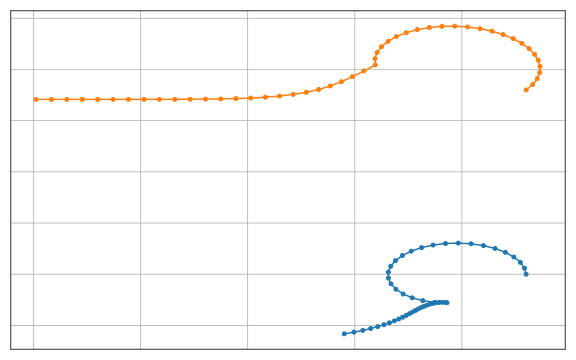
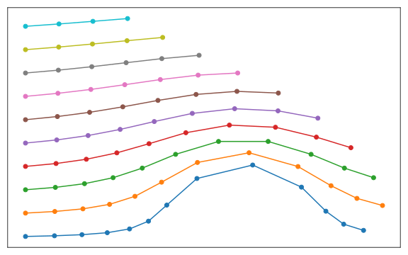
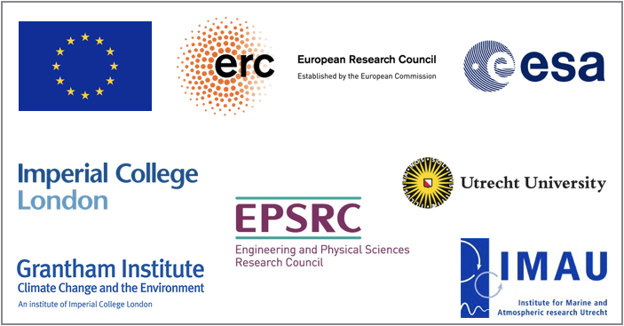

What is OceanParcels?
The OceanParcels project develops Parcels (Probably A Really Computationally Efficient Lagrangian Simulator), a set of Python classes and methods to create customisable particle tracking simulations using output from Ocean Circulation models. Parcels can be used to track passive and active particulates such as water, plankton, plastic and fish.
The code from the OceanParcels project is licensed under an open source MIT license and can be downloaded from github.com/OceanParcels/parcels or installed via anaconda.org/conda-forge/parcels:


The manuscript detailing this first release of Parcels, version 0.9, has been published in Geoscientific Model Development and can be cited as:
As ocean general circulation models (OGCMs) move into the petascale age, where the output of single simulations exceeds petabytes of storage space, tools to analyse the output of these models will need to scale up too. Lagrangian ocean analysis, where virtual particles are tracked through hydrodynamic fields, is an increasingly popular way to analyse OGCM output, by mapping pathways and connectivity of biotic and abiotic particulates. However, the current software stack of Lagrangian ocean analysis codes is not dynamic enough to cope with the increasing complexity, scale and need for customization of use-cases. Furthermore, most community codes are developed for stand-alone use, making it a nontrivial task to integrate virtual particles at runtime of the OGCM. Here, we introduce the new Parcels code, which was designed from the ground up to be sufficiently scalable to cope with petascale computing. We highlight its API design that combines flexibility and customization with the ability to optimize for HPC workflows, following the paradigm of domain-specific languages. Parcels is primarily written in Python, utilizing the wide range of tools available in the scientific Python ecosystem, while generating low-level C code and using just-in-time compilation for performance-critical computation. We show a worked-out example of its API, and validate the accuracy of the code against seven idealized test cases. This version 0.9 of Parcels is focused on laying out the API, with future work concentrating on support for curvilinear grids, optimization, efficiency and at-runtime coupling with OGCMs.
The manuscript detailing version 2.0 of Parcels is available at Geoscientific Model Development and can be cited as:
With the increasing amount of data produced by numerical ocean models, so increases the need for efficient tools to analyse these data. One of these tools is Lagrangian ocean analysis, where a set of virtual particles are released and their dynamics is integrated in time based on fields defining the ocean state, including the hydrodynamics and biogeochemistry if available. This popular methodology needs to adapt to the large variety of models producing these fields at different formats. This is precisely the aim of Parcels, a Lagrangian ocean analysis framework designed to combine (1) a wide flexibility to model particles of different natures and (2) an efficient implementation in accordance with modern computing infrastructure. In the new Parcels v2.0, we implement a set of interpolation schemes to read various types of discretised fields, from rectilinear to curvilinear grids in the horizontal direction, from z- to s- levels in the vertical and different variable distributions such as the Arakawa's A-, B- and C- grids. In particular, we develop a new interpolation scheme for a three-dimensional curvilinear C-grid and analyse its properties. Parcels v2.0 capabilities, including a suite of meta-field objects, are then illustrated in a brief study of the distribution of floating microplastic in the North West European continental shelf and its sensitivity to different physical processes.
Installing Parcels
The simplest way to install the Parcels code is to use Anaconda and the Parcels Conda-Forge package with the latest release of Parcels. This package will automatically install (almost) all the requirements for a fully functional installation of Parcels. This is the “batteries-included” solution probably suitable for most users.
The steps below are the installation instructions for Linux / macOS and for Windows. If the commands for Linux / macOS and Windows differ, this is indicated with a comment at the end of the line.
- Install Anaconda's Miniconda following the steps at https://conda.io/docs/user-guide/install/, making sure to select the Python-3 version. If you're on Linux / macOS, it also assumes that you installed Miniconda-3 to your home directory.
- Start a terminal (Linux / macOS) or the Anaconda prompt (Windows). Activate the root (or base) environment of your Miniconda and create an environment containing Parcels, all its essential dependencies, and the nice-to-have Jupyter, cartopy, and ffmpeg packages:
conda activate root # Linux / macOS
activate root # Windows
conda create -n py3_parcels -c conda-forge parcels jupyter cartopy ffmpeg
*Note that for some of the examples, pytest needs to be installed with conda install -n py3_parcels pytest.
- Activate the newly created Parcels environment.
conda activate py3_parcels # Linux / macOS
activate py3_parcels # Windows
- Get a copy of the Parcels tutorials and examples, as well as the data required to run these:
parcels_get_examples parcels_examples
*Note that if you are on Windows and you get a Fatal error in launcher error, you can instead download the data with
curl https://raw.githubusercontent.com/OceanParcels/parcels/master/parcels/scripts/get_examples.py > parcels_get_examples.py
python parcels_get_examples.py parcels_examples
- Run the simplest of the examples to validate that you have a working Parcels setup:
cd parcels_examples
python example_peninsula.py --fieldset 100 100
*Note that if you are on macOS and get a compilation error, you may need to accept the Apple xcode license (xcode-select --install). If this does not solve the compilation error, you may want to try running export CC=gcc . If the compilation error remains, you may want to check this solution.
- Optionally, if you want to run all the examples and tutorials, start Jupyter and open the tutorial notebooks:
jupyter notebook
- The next time you start a terminal and want to work with Parcels, activate the environment with:
conda activate py3_parcels # Linux / macOS
activate py3_parcels # Windows
Installing a non-released version of Parcels
There might be cases where you want to install a version of Parcels that has not been released yet. (Perhaps, if you want to use a bleeding-edge feature which already is included on Github, but not in the conda-forge package.)
Then, just after step 2 of
Installing Parcels above, use the following commands to remove the conda-forge package again, and use
pip to install Parcels from Github:
conda activate py3_parcels # Linux / macOS
activate py3_parcels # Windows
conda remove --force parcels
pip install git+https://github.com/OceanParcels/parcels.git@master
Installation for developers
Parcels depends on a working Python installation, a netCDF installation, a C compiler, and various Python packages. If you prefer to maintain your own Python installation providing all this,
git clone the
master branch of Parcels and manually install all packages listed under
dependencies in the environment files (
environment_py3_linux.yml for Linux,
environment_py3_osx.yml for OSX and
environment_py3_win.yml for Windows), before running
python setup.py install --prefix=PREFIX where
PREFIX is the path to the directory of your local branch of the parcels code.
Installation of Parallel Parcels with MPI
Parcels uses MPI for parallel execution, but this only works on linux and macOS. To install it, follow the steps below and see
here for further documentation
- We strongly encourage to create a new environment for Parallel Parcels:
conda create -n py3_parcels_mpi -c conda-forge parcels mpi4py mpich scikit-learn jupyter cartopy ffmpeg
conda activate py3_parcels_mpi
- If you are on a Mac, you may need to issue
export CONDA_BUILD_SYSROOT=/
export C_INCLUDE_PATH=$C_INCLUDE_PATH:/Applications/Xcode.app/Contents//Developer/Platforms/MacOSX.platform/Developer/SDKs/MacOSX10.14.sdk/usr/include/
Where possibly you may need to change the MacOSX10.14.sdk into the macOS version you have.
- Now, you can run in Parallel with e.g.
mpirun -np 2 python parcels/examples/example_stommel.py -p 10
Let us know your feedback!
Contributing to Parcels development
Ocean
Parcels is fully open-source community and strongly encourages contributions from users, as also stated in our
Contributor Code of Conduct. If you want to help make Ocean
Parcels even better, then please consider contributing to its development. To get started, see
this excellent tutorial on the Git workflow and
this great general overview of contributing to open source software.
Parcels tutorials
The best way to get started with Parcels is to explore the Jupyter notebooks below. By clicking on the tutorials you can read them on the Jupyter notebook viewer. Due to some issues with the GitHub API some notebooks are temporarily not found, resulting in a 404 Error. Please find the corresponding notebook file by clicking the GitHub tag in the card. If you want to practice by interacting with them, you can either visit
mybinder.org or run them on your own device if you have installed them with
parcels_get_examples parcels_examples (see 4. in the
installation).

The Parcels structure tutorial introduces the main building blocks for a Parcels simulation and is therefore a good starting point for new users

This tutorial guides you through a simple example of what you can do with the building blocks described in the General structure tutorial

A tutorial on how to start analyzing the Parcels output
Tutorials on setting up FieldSets
Tutorials on creating ParticleSets
Tutorials on writing kernels to be executed on each particle
Other tutorials
Parcels development status
The current release of Parcels, version 2.3, is a fully-functional, feature-complete code for offline Lagrangian ocean analysis. See below for a list of features, or keep an eye on the
Github Development Timeline page
Major features
Experimental features
Future development goals
Gallery

A notebook to plot bathymetry with continental contoured-geometries. The used colour map is 'cmo.ice'. Created by Claudio Pierard.

A notebook to animate particles with their vanishing trails over past timesteps in an unsteady doublegyre fluid. The background shows the absolute velocity magnitude. Created by Christian Kehl.

A notebook animating particles with a tidally-influenced flow field, animated with continental contoured-geometries using cartopy. Created by Laura Navarro Gomez.

A notebook animating data on a rotating Earth using cartopy. Created by Peter Nooteboom.
Frequently Asked Questions and further support
See the
FAQ page for further information on using and developing Parcels. This includes information on
the Parcels design overview,
tips on construction of FieldSet objects,
support for writing custom Kernels and
an explanation of the NetCDF output format.
If you need help with Parcels, try the
Discussions page on GitHub. There is also an
extensive documentation of all methods and classes in Parcels.
Peer-reviewed articles using Parcels
Microbes play a primary role in aquatic ecosystems and biogeochemical cycles. Spatial patchiness is a critical factor underlying these activities, influencing biological productivity, nutrient cycling and dynamics across trophic levels. Incorporating spatial dynamics into microbial models is a long-standing challenge, particularly where small-scale turbulence is involved. Here, we combine a fully 3D direct numerical simulation of convective mixed layer turbulence, with an individual-based microbial model to test the key hypothesis that the coupling of gyrotactic motility and turbulence drives intense microscale patchiness. The fluid model simulates turbulent convection caused by heat loss through the fluid surface, for example during the night, during autumnal or winter cooling or during a cold-air outbreak. We find that under such conditions, turbulence-driven patchiness is depth-structured and requires high motility: Near the fluid surface, intense convective turbulence overpowers motility, homogenising motile and non-motile microbes approximately equally. At greater depth, in conditions analogous to a thermocline, highly motile microbes can be over twice as patch-concentrated as non-motile microbes, and can substantially amplify their swimming velocity by efficiently exploiting fast-moving packets of fluid. Our results substantiate the predictions of earlier studies, and demonstrate that turbulence-driven patchiness is not a ubiquitous consequence of motility but rather a delicate balance of motility and turbulent intensity.
Most marine plastic pollution originates on land. However, once plastic is at sea, it is difficult to determine its origin. Here we
present a Bayesian inference framework to compute the probability that a piece of plastic found at sea came from a particular source. This framework combines information about plastic emitted by rivers with a Lagrangian simulation, and yields maps indicating the probability that a particle sampled somewhere in the ocean originates from a particular river source. We showcase the framework for floating river-sourced plastic released into the South Atlantic Ocean. We computed the probability as a function of the particle age at three locations, showing how probabilities vary according to the location and age. We computed the source probability of beached particles, showing that plastic found at a given latitude is most likely to come from the closest river source. This framework lays the basis for source attribution of marine plastic.
We study the peculiar motion of inertial solid particles across stratified turbulent/non-turbulent interfaces (STNTI). Previous studies in quiescent stratified layers demonstrated that inertial particles slow down substantially due to an additional force term related to the stratification. Here we report for the first time a similar effect on inertial particles moving across a two-layer STNTI of finite thickness. This problem is addressed both experimentally and numerically: we utilize the three-dimensional particle tracking velocimetry (3D-PTV) in a index-matched STNTI experiment under an oscillating grid, and two direct numerical simulation (DNS) cases of STNTI. The DNSs test the effects of different turbulent forcings on inertial spheres in the turbulent layer and across STNTI and extends the parameter ranges of Reynolds and Froude numbers unfeasible in the experiments. Turbulence is produced in the DNSs using a convective forcing (heat source at the domain boundary) in one case, and a forcing that mimics a vertically oscillating grid in the other. The numerical spheres are tracked, through one-way coupling approach, using a modified Basset–Boussinesq–Oseen equation which includes a stratification-induced term. The stratification force is modelled as an additional buoyancy of a caudal wake with varying density. This algorithm creates Lagrangian trajectories that resemble the motion of inertial particles across stratified interfaces in quiescent and turbulent experiments. Furthermore, numerical results for the STNTI cases help to distinguish the essential features observed in the experiments that are caused by stratification from those that relate to turbulence–particle interactions.
The North Atlantic Ocean is a key region for carbon sequestration by the biological carbon pump (BCP). The quantity of organic carbon exported from the surface, the region and depth at which it is remineralized, and the subsequent timescale of ventilation (return of the remineralized carbon back into contact with the atmosphere), control the magnitude of BCP sequestration. Carbon stored in the ocean for >100 years is assumed to be sequestered for climate-relevant timescales. We apply Lagrangian tracking to an ocean circulation and marine biogeochemistry model to determine the fate of North Atlantic organic carbon export. Organic carbon assumed to undergo remineralization at each of three vertical horizons (500, 1,000, and 2,000 m) is tracked to determine how much remains out of contact with the atmosphere for 100 years. The fraction that remains below the mixed layer for 100 years is defined as the sequestration efficiency (SEff) of remineralized exported carbon. For exported carbon remineralized at the 500, 1,000 and 2,000 m horizons, the SEff is 28%, 66% and 94%, respectively. Calculating the amount of carbon sequestered using depths ≤1,000 m, and not accounting for downstream ventilation, overestimates 100-year carbon sequestration by at least 39%. This work has implications for the accuracy of future carbon sequestration estimates, which may be overstated, and for carbon management strategies (e.g., oceanic carbon dioxide removal and Blue Carbon schemes) that require long-term sequestration to be successful.
Recently, a number of authors have used global particle tracking simulations to identify the effect that different surface currents have on marine litter accumulation, including the role of surface waves through the Stokes drift. However, in the upper-ocean boundary layer and in the presence of the Coriolis force, a wave-driven Eulerian flow forms that must be superimposed onto the Stokes drift in order to obtain the correct Lagrangian velocity. Taking into account both the Coriolis–Stokes force and the surface wave stress, Higgins, Vanneste, and van den Bremer (2020) derived an expression for this unsteady wave-driven Eulerian-mean flow in the form of a convolution between the Stokes drift and the so-called Ekman–Stokes kernel. In this paper, we apply this Ekman–Stokes kernel to generate a 12-year global hindcast of the wave-driven Eulerian current and show that its inclusion in particle tracking simulations has a significant effect on the distribution of small floating marine litter, such as microplastics. Using Lagrangian simulations, we find that the wave-driven Eulerian current is sensitive to the value of viscosity but generally opposes the dispersive behaviour of the Stokes drift, reducing the amount of cross-Equator particle transport and transport to the polar regions, resulting in closer agreement between modelled and observed microplastic distributions.
Ichthyoplankton assemblages in the south central Tyrrhenian Sea are not known in spite of this being an intensely fished area. There are two large canyons in this region: Dohrn, in the Gulf of Naples, and Cuma, at the south end of the Gulf of Gaeta. In this study, we provide the first description of summer ichthyoplankton assemblages in the vicinity of the two canyons and present the physical features and Lagrangian particle tracking analyses at the time of the sampling. We identified fish larvae of 19 families and fish eggs of 8 families. The most abundant species was Engraulis encrasicolus, which was found at densities comparable to other known spawning grounds of the western Mediterranean. Mesopelagic species, such as Gonostomatidae and Myctophidae, were also abundant, especially at the Cuma Canyon. The notochord and standard length of the E. encrasicolus larvae ranged from 2.06 to 10.47mm and was significantly smaller at the Cuma stations than at the Dohrn stations, suggesting the presence of sub-populations with different spawning phenologies. The passive particle tracking analyses and the examination of currents confirmed distinct circulation features between the two sampled regions and in relation to depth and proximity to the canyon heads. These results uncover previously unknown rich assemblages of fish eggs and larvae and have conservation and management implications given the proximity of these canyons to a marine protected area and to an intensely fished continental shelf.
Retention is a key driver of biological productivity near the coast since increased concentrations of planktonic particles in retention hotspots boost local primary production, availability of particulate food and larval recruitment. Known retention sites, such as bays, are also places where anthropogenic pressures accumulate in the form of pollution, harmful algal blooms, fisheries, aquaculture and port developments. In the face of these growing hazards, South African bays were recently declared ‘threatened’ priority sites for enhanced conservation and marine spatial planning (MSP). Multidisciplinary studies that spatially relate human impacts to physical features (such as retention patterns) and ecological processes (such as primary production) are valuable in this context. This study made use of a high resolution CROCO (Coastal and Regional Ocean Community Model) model along with the Parcels particle-tracking tool to develop a spatio-temporal coastal retention index (CORE) for the South African coastal ocean. To explore links between retention, biological productivity and anthropogenic impacts, a monthly time series of CORE (2001–2012) was evaluated in relation to satellite-derived coastal chlorophyll-a (Chl-a) and an index of cumulative human pressure. CORE showed variable temporal relationships with Chl-a among different subregions, however, when integrated over time, their spatial trends and peaks commonly aligned. This was most obvious on the south coast, where retention, Chl-a and human pressures peaked in the majority of bays that characterise this region. In the case of St Helena Bay on the west coast, CORE failed to represent a prominent retentive feature associated with upwelling, due to rapid alongshore advection of particles outside the 25-km retention radius of CORE. Despite this limitation, CORE provided profound insight into the variability of the coastal circulation around South Africa and its coupling with other socio-ecological variables. By contributing a novel data layer for MSP, CORE assists the integrated coastal management of bay ecosystems that face the hazards of multiple destructive uses.
The equatorial retroflection of the North Brazil Current (NBC) into the Equatorial Undercurrent (EUC) and its posterior tropical recirculation is a major regulator for the returning limb of the Atlantic Meridional Overturning Circulation (AMOC). Indeed, most surface and thermocline NBC waters retroflect at the equator all the way into the central and eastern Atlantic Ocean, before they recirculate back through the tropics to the western boundary. Here we use cruise data in the western equatorial Atlantic during April 2010 and reanalysis time series for the equatorial and tropical waters in both hemispheres in order to explore the recirculation pathways and transport variability. During the 1998-2016 period, the annual-mean EUC transports 15.1 ± 1.3 Sv at 32{degree sign}W, with 2.8 ± 0.4 Sv from the North Atlantic and 11.4 ± 1.3 Sv from the South Atlantic. Most of the total EUC transport comes from the western boundary retroflection south of 3{degree sign}N (7.2 ± 0.9 Sv) and a substantial fraction retroflects north of 3{degree sign}N (5.1 ± 0.4 Sv). The South Atlantic Subtropical waters feed the EUC at all thermocline depths while the North Atlantic and South Atlantic tropical waters do so at the surface and upper-thermocline levels. The EUC transport has a pronounced seasonality, with spring and fall maxima and a range of 8.8 Sv. The 18-year of reanalysis data shows a weak yet significant correlation with an Atlantic Niño index, and also suggests an enhanced contribution from the South Atlantic tropical waters during 2008-2016 as compared with 1997-2007.
The fate of (micro)plastic particles in the open ocean is controlled by biological and physical processes. Here, we model the effects of biofouling on the subsurface vertical distribution of spherical, virtual plastic particles with radii of 0.01-1 mm. The biological specifications include the attachment, growth and loss of algae on particles. The physical specifications include four vertical velocity terms: advection, wind-driven mixing, tidally-induced mixing, and the sinking velocity of the biofouled particle. We track 10,000 particles for one year in three different regions with distinct biological and physical properties: the low productivity region of the North Pacific Subtropical Gyre, the high productivity region of the Equatorial Pacific and the high mixing region of the Southern Ocean. The growth of biofilm mass in the euphotic zone and loss of mass below the euphotic zone result in the oscillatory behaviour of particles, where the larger (0.1-1.0 mm) particles have much shorter average oscillation lengths (<10 days; 90th percentile) than the smaller (0.01-0.1 mm) particles (up to 130 days; 90th percentile). A subsurface maximum particle concentration occurs just below the mixed layer depth (around 30 m) in the Equatorial Pacific, which is most pronounced for larger particles (0.1-1.0 mm). This occurs since particles become neutrally buoyant when the processes affecting the settling velocity of a particle and the seawater's vertical movement are in equilibrium. Seasonal effects in the subtropical gyre result in particles sinking below the mixed layer depth only during spring blooms, but otherwise remaining within the mixed layer. The strong winds and deepest average mixed layer depth in the Southern Ocean (400 m) result in the deepest redistribution of particles (>5000 m). Our results show that the vertical movement of particles is mainly affected by physical (wind-induced mixing) processes within the mixed layer and biological (biofilm) dynamics below the mixed layer. Furthermore, positively buoyant particles with radii of 0.01-1.0 mm can sink far below the euphotic zone and mixed layer in regions with high near-surface mixing or high biological activity. This work can easily be coupled to other models to simulate open-ocean biofouling dynamics, in order to reach a better understanding of where ocean (micro)plastic ends up.
Spiciness anomalies generated in the salinity maxima region are important for several atmospheric and oceanic factors as they move along the geostrophic pathways towards the equator and resurface. Subduction and injection mechanisms are responsible for the spiciness generation in the South Indian Ocean (SIO) salinity maxima region. Using ECCO data from 1992 to 2017, here we study monthly variations of spiciness associated with both of these mechanisms in the SIO salinity maxima region. Using a Lagrangian approach, we estimated the monthly evolution of the subduction rate. A maximum subduction rate of 35–38 m/mon occurs during September and consequently decreases towards the end of the year. The effective subduction rate in the salinity maxima region shows the dominance of temporal induction (mixed layer tendency) term, with a sharp gradient in total subduction rate along the 30∘S associated with large mixed layer depth variation. Further, a high Turner angle (>66∘) to the south of 30∘S confirms the generation of spiciness by injection mechanism. We found that the decrease in mixed layer salt (MLS) coincides with the increase in salinity below the mixed layer. To explore the significance of MLS changes in spiciness generation, we further addressed the monthly evolution of spiciness through MLS budget. Our results suggest that the entrainment and meridional advection terms are key to monthly variations in MLS changes and thus the spiciness.
Ocean eddies play an important role in the transport and mixing processes of the ocean due to their ability to transport material, heat, salt, and other tracers across large distances. They exhibit at least two timescales: an Eulerian lifetime associated with persistent identifiable signatures in gridded fields such as vorticity or sea-surface height and multiple Lagrangian or material coherence timescales that are typically much shorter. We propose a method to study the multiple-timescale material transport, leakage, and entrainment by eddies with their surroundings by constructing sequences of finite-time coherent sets, computed as superlevel sets of dominant eigenfunctions of dynamic Laplace operators. The dominant eigenvalues of dynamic Laplace operators defined on time intervals of varying length allows us to identify a maximal coherence timescale that minimizes the rate of mass loss over a domain per unit flow time. We apply the method to examine the persistence and material coherence of an Agulhas ring, an ocean eddy in the South Atlantic ocean, using particle trajectories derived from a 0.1∘ global numerical ocean simulation. Using a sequence of sliding windows, the method is able to identify and track a persistent eddy feature for a time much longer than the maximal coherence timescale and with considerably larger material transport than the corresponding eddy feature identified from purely Eulerian information. Furthermore, the median residence times of fluid in the identified feature far exceed the timescale over which fully material motion is guaranteed. Through residence time calculations, we find that this particular eddy does not exhibit a long-lived coherent inner core and that the bulk of material transport is performed by the quasi-coherent outer ring of the eddy.
Turbulent mixing is a vital component of vertical particulate transport, but ocean global circulation models (OGCMs) generally have low resolution representations of near-surface mixing. Furthermore, turbulence data is often not provided in OGCM model output. We present 1D parametrizations of wind-driven turbulent mixing in the ocean surface mixed layer, which are designed to be easily included in 3D Lagrangian model experiments. Stochastic transport is computed by Markov-0 or Markov-1 models, and we discuss the advantages/disadvantages of two vertical profiles for the vertical diffusion coefficient Kz. All vertical diffusion profiles and stochastic transport models lead to stable concentration profiles for buoyant particles, which for particles with rise velocities of 0.03 and 0.003 m/s agree relatively well with concentration profiles from field measurements of microplastics when Langmuir-circulation-driven turbulence is accounted for. Markov-0 models provide good model performance for integration timesteps of dt = 30 seconds, and can be readily applied in studying the behaviour of buoyant particulates in the ocean. Markov-1 models do not consistently improve model performance relative to Markov-0 models, and require an additional parameter that is poorly constrained.
Coastlines potentially harbor a large part of litter entering the oceans such as plastic waste. The relative importance of the physical processes that influence the beaching of litter is still relatively unknown. Here, we investigate the beaching of litter by analyzing a data set of litter gathered along the Dutch North Sea coast during extensive beach cleanup efforts between the years 2014-2019. This data set is unique in the sense that data is gathered consistently over various years by many volunteers (a total of 14,000), on beaches which are quite similar in substrate (sandy). This makes the data set valuable to identify which environmental variables play an important role in the beaching process, and to explore the variability of beach litter concentrations. We investigate this by fitting a random forest machine learning regression model to the observed litter concentrations. We find that especially tides play an important role, where an increasing tidal variability and tidal height lead to less litter found on beaches. Relatively straight and exposed coastlines appear to accumulate more litter. The regression model indicates that transport of litter through the marine environment is also important in explaining beach litter variability. By understanding which processes cause the accumulation of litter on the coast, recommendations can be given for more effective removal of litter from the marine environment, such as organizing beach cleanups during low tides at exposed coastlines. We estimate that 16,500-31,200 kilograms (95% confidence interval) of litter are located on the 365 kilometers of Dutch North Sea coastline.
In the eastern Alboran Sea, frontogenesis (FG) is a dominant process for fronts extending from the Spanish coast toward the basin interior, promoting large vertical displacements that connect the surface mixed layer with the oceanic interior. Using a realistic, high-resolution model simulation for this region, we conduct the offline advection of virtual water parcels released near the surface during a 2-day episode of intense FG. Three-dimensional trajectories exhibit high variability depending on the release location, and some large, rapid vertical displacements are induced by different coherent submesoscale flow patterns and by interactions among them: Ageostrophic secondary circulation associated with strain- and mixing-induced FG and internal waves generated by currents over topography. These deep displacements mostly are irreversible, at least on a short time scale, because of the rapidly changing flow patterns. Significant diapycnal mixing and density changes occur along trajectories as they pass through the surface and bottom boundary layers. While we expect these processes to be typical for this region, the computational expense of such a Lagrangian analysis and the complexity of its outcome present a considerable challenge for more comprehensive assessments.
Some lipid-biomarker-based sea surface temperature (SST) proxies applied in the modern Mediterranean Sea exhibit large offsets from expected values, generating uncertainties in climate reconstructions. Lateral transport of proxy carriers along ocean currents prior to burial can contribute to this offset between reconstructed and expected SSTs. We perform virtual particle tracking experiments to simulate transport prior to and during sinking and derive a quantitative estimate of transport bias for alkenones and glycerol dibiphytanyl glycerol tetraethers (GDGTs), which form the basis of the UK'37 and TEX86 paleothermometers, respectively. We use a simple 30-day surface advection scenario and sinking speeds appropriate for the export of various proxy carriers (6, 12, 25, 50, 100, 250, 500, and 1000 md-1). For the assessed scenarios, lateral transport bias is generally small (always <0.85 {degree sign}C) within the Mediterranean Sea and does not substantially contribute to uncertainties in UK'37- or TEX86-based SSTs.
Marine particles are important regulators of the biogeochemistry of many trace elements and isotopes in the ocean, and as such, there has been an increasing motivation to unravel the processes which control their cycling. Here, we present vertical distributions of total particulate trace elements (Al, V, Fe, Mn and P) and particulate organic carbon and particulate nitrogen (POC and pN) collected during the GEOTRACES Canadian cruise in 2015 in the Canada Basin (CB), the Canadian Arctic Archipelago (CAA), Baffin Bay (BB) and the Labrador Sea (LS), where particulate trace metal data are scarce. While particulate trace elements are generally affected by one–dimensional dynamics in ocean waters (e.g. deposition, scavenging/remineralization, and sinking), lateral transport of lithogenic–derived particles (pAl, pV and pFe) plays a dominant role in shaping their distributions in the deep CB, BB and LS basins. Higher concentrations of the aforementioned particulate trace elements are measured along the flow path of boundary currents and in near–bottom waters. Unlike pAl, pV and pFe, primarily controlled by lithogenic sources, bulk pMn distributions in our study regions (with the exception of LS) are dominated by authigenic Mn+3/4 oxides, with distinctively high concentrations in CB and BB subsurface halocline waters, as well as in the deepest samples in BB. Enhanced bacterially-mediated Mn+2 oxide formation is anticipated to occur in these halocline waters which have the potential to sustain large populations of Mn oxidizing bacteria as result of the close sediment-water interactions and distinct environmental conditions of these water masses. Overall, the highest concentrations of pP, POC and pN occurred in surface and near–surface waters (> 100 m) at the same density as a chlorophyll-a peak and transmissivity drop, with a clear west–east increasing concentration gradient from the CB to LS. In summary, biogeochemical cycles of particulate elements in the Canadian Arctic Ocean are controlled by enhanced lateral transport and sediment resuspension (pAl, pFe and pV), authigenic formation of Mn and biological production (pP, POC and pN).
Beaches are thought to be a large reservoir for marine plastics. To protect vulnerable beaches, it is advantageous to have information on the sources of this plastic. Here, we develop a universally applicable Bayesian framework to map sources of plastic arriving on a specific beach. In this framework, we combine Lagrangian backtracking simulations of drifting particles with estimates of plastic input from coastlines, rivers and fisheries. The advantage over traditional Lagrangian simulations is that the Bayesian framework can consider information on known sources, and thus facilitates spatiotemporal source attribution for plastic arriving at the specified beach. We show that the main sources for our target beach in southwest Netherlands are the east coast of the UK, the Dutch coast, the English Channel (fisheries) and the Thames, Seine, Rhine and Trieux (rivers). We also show that floating time is a major uncertainty in source attribution using backtracking.
Having descended through the water column, microplankton in ocean sediments are representative for the ocean surface environment, where they originated from. Sedimentary microplankton is therefore used as an archive of past and present surface oceanographic conditions. However, these particles are advected by turbulent ocean currents during their sinking journey. So far, it is unknown to what extent this particle advection shapes the microplankton composition in sediments. Here we use global simulations of sinking particles in a strongly eddying global ocean model, and define ocean bottom provinces based on the particle surface origin locations. We find that these provinces can be detected in global datasets of sedimentary microplankton assemblages, demonstrating the effect provincialism has on the composition of sedimentary remains of surface plankton. These provinces explain the microplankton composition, in addition to e.g. ocean surface environment. Connected provinces have implications on the optimal spatial extent of microplankton sediment sample datasets that are used for palaeoceanographic reconstructions, and on the optimal spatial averaging of sediment samples over global datasets.
To capture the effects of mesoscale turbulent eddies, coarse-resolution Eulerian ocean models resort to tracer diffusion parameterizations. Likewise, the effect of eddy dispersion needs to be parameterized when computing Lagrangian pathways using coarse flow fields. Dispersion in Lagrangian simulations is traditionally parameterized by random walks, equivalent to diffusion in Eulerian models. Beyond random walks, there is a hierarchy of stochastic parameterizations, where stochastic perturbations are added to Lagrangian particle velocities, accelerations, or hyper-accelerations. These parameterizations are referred to as the 1st, 2nd and 3rd order “Markov models” (Markov-N), respectively. Most previous studies investigate these parameterizations in two-dimensional setups, often restricted to the ocean surface. On the other hand, the few studies that investigated Lagrangian dispersion parameterizations in three dimensions, where dispersion is largely restricted to neutrally buoyant surfaces, have focused only on random walk (Markov-0) dispersion. Here, we present a three-dimensional isoneutral formulation of the Markov-1 model. We also implement an anisotropic, shear-dependent formulation of random walk dispersion, originally formulated as a Eulerian diffusion parameterization. Random walk dispersion and Markov-1 are compared using an idealized setup as well as more realistic coarse and coarsened (50 km) ocean model output. While random walk dispersion and Markov-1 produce similar particle distributions over time when using our ocean model output, Markov-1 yields Lagrangian trajectories that better resemble trajectories from eddy-resolving simulations. Markov-1 also yields a smaller spurious dianeutral flux.
Tropical instability vortices (TIVs) have a major influence on the physics and biogeochemistry of the equatorial Pacific. Using an eddy-resolving configuration of the Community Earth System Model (CESM-HR) and Lagrangian particle tracking, we examine TIV impacts on the three-dimensional structure and variability of dissolved oxygen (O2) in the upper equatorial Pacific water column. In CESM-HR, the simulated generation and westward propagation of TIVs from boreal summer through winter lead to the seasonal oxygenation of the upper northern equatorial Pacific, exhibited as a deepening of hypoxic depth west of 120°W. TIV effects on the equatorial Pacific oxygen balance are dominated by eddy-advection and mixing, while indirect TIV effects on O2 consumption play minor roles. These advective effects reflect the transient displacements of isopycnals by eddy pumping as well as vortex transport of oxygen by eddy trapping, stirring, and subduction. TIVs influence on the upper equatorial Pacific O2 distribution and variability has important implications for understanding and modeling marine ecosystem dynamics and habitats, and should be taken into consideration in designing observation networks in this region.
Jakarta is the capital of Indonesia with a high population density, which affects the amount of waste generated. The waste that ends up in Jakarta Bay has become an environmental problem. Understanding the pathway of marine debris in the ocean is important to identify the mitigation strategies. Before this study, the pathways and sources of marine debris in Jakarta Bay were unknown. By using virtual floating marine debris particles in a high-resolution ocean model, the fate of marine debris based on the pathways of particles released in Jakarta Bay in both forward and backward tracking experiments was analyzed. It was found that most of the particles from Jakarta Bay flow toward the Indian Ocean in all seasons. They flow off through the Sunda Strait and reach the open Indian Ocean after a few weeks. With regard to the source location, most particles that end up in Jakarta Bay come from the north of Java Island locally and from the Gulf of Thailand, Sumatra, and Kalimantan coasts. The particles do not appear to vary significantly across all seasons and identifying the pathway of marine debris might be useful in pollution reduction.
Identifying internal waves in complex flow fields is a long-standing problem in fluid dynamics, oceanography and atmospheric science, owing to the overlap of internal waves temporal and spatial scales with other flow regimes. Lagrangian filtering—that is, temporal filtering in a frame of reference moving with the flow—is one proposed methodology for performing this separation. Here we (a) describe an improved implementation of the Lagrangian filtering methodology and (b) introduce a new freely available, parallelized Python package that applies the method. We show that the package can be used to directly filter output from a variety of common ocean models including MITgcm, Regional Ocean Modeling System and MOM5 for both regional and global domains at high resolution. The Lagrangian filtering is shown to be a useful tool to both identify (and thereby quantify) internal waves, and to remove internal waves to isolate the non-wave flow field.
The present study investigates the advective pathways and transit times of virtual particles released in the Red Sea outflow area as a proxy for the poorly understood spreading of the Red Sea Overflow Water (RSOW) in the Arabian Sea. This work uses the Parcels toolbox, a Lagrangian framework, to simulate tens of thousands of trajectories under different initial conditions. Six different Lagrangian simulations are performed at isobaric and isopycnal surfaces within the RSOW layer. All simulations are based on the eddy-rich GLORYS12 reanalysis that merges almost all in-situ (temperature-salinity) and satellite observations collected over the last two decades into a dynamical framework. This study shows that GLORYS12 reproduces relatively well the climatological seasonal cycle of the RSOW to the Gulf of Aden and essential characteristics of the exchange at the Strait of Bab al-Mandab. Statistical comparisons between synthetic trajectories and RAFOS floats in the Gulf of Aden corroborate the quality of GLORYS12 velocity fields used for the Lagrangian simulations. Six main advective pathways are uncovered (by order of preference): Southwest, Northwest, Socotra Passage, Central, Eastern, and Southern. Trajectories from Argo floats give observational support for some of these paths. Although most particles are exported out of the Arabian Sea off Somalia, the simulations reveal robust connectivity of the RSOW to the Arabian Sea interior and its eastern boundary. The fact that particles have long trajectories in the interior increases the potential of RSOW mixing with the fresher and oxygen-poor ambient waters. Thus, these pathways may have profound implications for the salt and oxygen budgets in the Arabian Sea since the RSOW is also part of the global overturning circulation and exported out of the Indian Ocean via the Agulhas Current. Transit time distributions indicate that it takes about six months for outflow-originated particles to spread over the entire Gulf of Aden and one to three years to be exported along the western boundary, toward Somalia (Socotra Passage and Southwest pathways) and off the Yemeni-Omani coast (Northwest Pathway). In contrast, reaching the eastern boundary takes much longer. North of 14 N, the most frequent time is around 10–15 years, and about 20–25 years at the southeastern Arabian Sea. Hence, the RSOW can often carry oxygen to the western boundary but not to the eastern basin. This may contribute to the eastern shift of the Arabian Sea Oxygen Minimum Zone, a subject that deserves investigation.
Coastal upwellings, due to offshore Ekman transport, are more energetic at the western boundaries of the oceans, where they are intensified by incoming Rossby waves, than at the eastern boundaries. Western boundary upwellings are often accompanied by a local vortex field. The instability of a developed upwelling front and its interaction with an external vortex field is studied here with a three-dimensional numerical model of the hydrostatic rotating Navier-Stokes equations (the primitive equations). The baroclinic instability of the front leads to the growth of meanders with 100-200 km wavelength, in the absence of external vortex. On the 𝑓-plane, these waves can break into a row of vortices when the instability is intense. The 𝛽-effect is stabilizing and strongly decreases the amplitude of meanders. Simulations are then performed with a front initially accompanied by one or several external vortices. The evolutions in this case are compared with those of the unstable jet alone. On the 𝑓-plane, when an external vortex is close to the front, this latter sheds a long filament which wraps up around the vortex. This occurs over a period similar to that of the instability of the isolated front. Cyclones are more efficient in tearing such filaments offshore than anticyclones. On the 𝛽-plane, the filaments are short and turbulence is confined to the vicinity of the front. At long times, waves propagate along the front, thus extending turbulence alongshore. The initial presence of a vortex alley leads to a stronger destabilization of the front and to a larger cross-shore flux than for a single vortex, with many filaments and small vortices pushed far offshore. In the ocean, this cross-shore exchange has important consequences on the local biological activity.
The southern branch of the South Equatorial Current (SSEC) is the northern limit of the South Atlantic Subtropical Gyre. When this current reaches Brazil around 14°S it bifurcates into a southward flow as the Brazil Current (BC) and the surface portion of the northward flowing North Brazil Undercurrent (NBUC). The SSEC system is a key component of the western boundary supply, influencing the NBUC/BC variability and, therefore, global climate through the Meridional Overturning Circulation. In this study, using altimetry satellite data and reanalyzes outputs (1993–2018), we revisit the SSEC mean state and show this current arriving at the South Atlantic western boundary as a multi-banded flow with surface signatures resulting from different subsurface cores. These bands have velocities between 0.02 and 0.07 m s−1 and, as shown by ADCP data from the PIRATA project, their signature in synoptic scenarios is obscured by eddies and waves with velocities between 0.1 and 0.3 m s−1. In addition, the SSEC annual cycle analysis shows that the seasonality of the bands is out of phase with each other, presenting westward transport anomalies between 0.4 and 2.6 Sv. Finally, our results show that the seasonality of this multi-banded flow both defines where the BC is born, and modulates the seasonality of semi-permanent mesoscale eddies off Brazil.
Marine plastics are considered to be a major threat to the sustainable use of marine and coastal resources of the Caribbean, on which the region relies heavily for tourism and fishing. To date, little work has quantified plastics within the Caribbean marine environment or examined their potential sources. This study aimed to address this by holistically integrating marine (surface water, subsurface water and sediment) and terrestrial sampling and Lagrangian particle tracking to examine the potential origins, flows and quantities of plastics within the Southern Caribbean. Terrestrial litter and the microplastics identified in marine samples may arise from the maritime and tourism industries, both of which are major contributors to the economies of the Caribbean region. The San Blas islands, Panama had the highest abundance of microplastics at a depth of 25 m, and significantly greater quantities in surface water than recorded in the other countries. Modelling indicated the microplastics likely arose from mainland Panama, which has some of the highest levels of mismanaged waste. Antigua had among the lowest quantities of terrestrial and marine plastics, yet the greatest diversity of polymers. Modelling indicated the majority of the microplastics in Antiguan coastal surface were likely to have originated from the wider North Atlantic Ocean. Ocean currents influence the movements of plastics and thus the relative contributions arising from local and distant sources which become distributed within a country's territorial water. These transboundary movements can undermine local or national legislation aimed at reducing plastic pollution. While this study presents a snapshot of plastic pollution, it contributes towards the void of knowledge regarding marine plastic pollution in the Caribbean Sea and highlights the need for international and interdisciplinary collaborative research and solutions to plastic pollution.
The Lagrangian analysis of particulate matter, biota and drifters, which are dispersed by turbulent fluid currents, is a cornerstone of oceanographic studies, covering diverse study objectives. The results of Lagrangian simulations and observations is predominantly visualised by means of easy-access plotting interfaces and simple presentation techniques. We analysed over 50 publications from the years 2010–2020 with respect to their visual design to deduce common visualisation practices in the domain. Individual figures are analysed towards adherence to visualisation best-practices, algebraic visualisation guidelines and the IPCC visual style guide. In this article, we present the resulting best-practices and common pitfalls in the design of Lagrangian ocean visualisations. Based on this visual study, we highlight that raising awareness of established visual guidelines may have a higher impact on improving the visual quality of publications in oceanography than the vigorous development of more general-purpose visualisation tools.
The southward flow of North Atlantic Deep Water makes up the major component of the deepwater limb of the Atlantic Meridional Overturning Circulation (AMOC). In the subtropical North Atlantic, it's flow is concentrated along the continental slope, forming a coherent Deep Western Boundary Current (DWBC). Both, observations and models show a high variability of the flow in this region. Here we use an eddy-rich ocean model to show that this variability is mainly caused by eddies and meanders. Their formation process involves an important contribution from energy transfer by barotropic instability. They occur along the entire DWBC pathway and introduce several recirculation gyres that result in a decorrelation of the DWBC transport at 26.5°N and 16°N, despite the fact that a considerable mean transport of 20 Sv connects the two latitudes. Water in the DWBC at 26.5°N is partly returned northward. Because the amount of water returned depends on the DWBC transport itself, a stronger DWBC does not necessarily lead to an increased amount of water that reaches 16°N. Along the pathway to 16°N, the transport signal is altered by a broad and temporally variable transit time distribution. Thus, advection in the DWBC cannot account for coherent AMOC changes on interannual timescales seen in the model.
How far do marine larvae disperse in the ocean? Decades of population genetic studies have revealed generally low levels of genetic structure at large spatial scales (hundreds of kilometres). Yet this result, typically based on discrete sampling designs, does not necessarily imply extensive dispersal. Here, we adopt a continuous sampling strategy along 950 km of coast in the northwestern Mediterranean Sea to address this question in four species. In line with expectations, we observe weak genetic structure at a large spatial scale. Nevertheless, our continuous sampling strategy uncovers a pattern of isolation by distance at small spatial scales (few tens of kilometres) in two species. Individual-based simulations indicate that this signal is an expected signature of restricted dispersal. At the other extreme of the connectivity spectrum, two pairs of individuals that are closely related genetically were found more than 290 km apart, indicating long-distance dispersal. Such a combination of restricted dispersal with rare long-distance dispersal events is supported by a high-resolution biophysical model of larval dispersal in the study area, and we posit that it may be common in marine species. Our results bridge population genetic studies with direct dispersal studies and have implications for the design of marine reserve networks.
The constant increase of marine plastic pollution poses an unprecedented risk to oceanic islands, which become increasingly exposed to a hazard of which they have very little control. Located in the Northeast Atlantic Ocean, the Macaronesia is comprised by the Azores, Madeira, Canary Islands, and Cabo Verde. Although past studies suggest that most plastic items collected on these islands are from offshore regions, their actual sources remain unclear to present date. As such, we focus on the characterization of the potential sources and pathways of plastic particles reaching the Macaronesia archipelagos. This is achieved by combining modeled datasets for ocean currents, winds and waves with a Lagrangian tool used to track virtual particles released around the archipelagos for a 10-year period, making a distinction between surface and submerged particles. Global drifter trajectories are also assessed, selecting those that intercept the archipelagos. Our results demonstrate that the North Atlantic subtropical gyre is the most conspicuous feature in particles and drifter trajectories. The Gulf Stream acts as the main pathway for all archipelagos at a regional scale, though with less significance to Cabo Verde. Surface particles are connected to regional sources in a shorter timescale than mixed particles, mainly because of the wind. Intercepting high-windage particle trajectories are dominant at the center of the North Atlantic subtropical gyre, demonstrating that particles originating from the North Atlantic “garbage patch” are most likely to intercept the archipelagos if considerably exposed to the wind. Regarding the connectivity to sources, all archipelagos are significantly exposed to areas of intensive fishing activity, mainly those located in the Gulf Stream (Azores), in international waters off the Portuguese coast (Madeira and Canary Islands) and along the Northwestern African coast (Cabo Verde). The east coasts of Central and North America are the main sources of land-based particles reaching the Azores, Madeira, and Canary Islands, whereas the Northwestern African coast is the main source for land-based particles reaching Cabo Verde. Our results demonstrate how vulnerable the Macaronesian archipelagos are to marine plastic pollution, highlighting the urgency for international cooperation to mitigate the exposure of oceanic islands to marine plastic pollution.
Plastic is the most abundant type of marine litter and it is found in all of the world’s oceans and seas, even in remote areas far from human activities. It is a major concern because plastics remain in the oceans for a long time. To address questions that are of great interest to the international community as it seeks to attend to the major sources of marine plastics in the ocean, we use particle tracking simulations to simulate the motions of mismanaged plastic waste and provide a quantitative global estimate of (1) where does the marine litter released into the ocean by a given country go and (2) where does the marine litter found on the coastline of a given country come from. The overall distribution of the modeled marine litter is in good agreement with the limited observations that we have at our disposal and our results illustrate how countries that are far apart are connected via a complex web of ocean pathways (see interactive website https://marinelitter.coaps.fsu.edu). The tables summarizing the statistics for all world countries are accessible from the supplemental information in .pdf or .csv formats.
The ability to provide rapid decision support and more precise search area coordinates for rescuers to conduct search and rescue operations at sea are of high impact value for marine and maritime stakeholders. Search and rescue operations rely on accurate information about metocean conditions to locate objects in the ocean. These include local knowledge, operational ocean and wind forecasts and empirical drift relationships between ocean currents, ocean surface winds and the objects being searched for. To provide more accurate decision support for rescuers looking for persons or objects lost at sea, a virtual particle tracking tool was combined with an empirical Leeway drift model. The Lagrangian Ocean Search Targets (LOST) application builds on a Lagrangian ocean analysis framework which has been adapted to provide real-time estimates of the positions of objects based on operational ocean and wind forecasts. LOST incorporates the impact of ocean currents, surface winds and stochastic motion, the latter being critical in accounting for sub-grid scale processes that are not resolved in the ocean and wind forecasts. This study assesses the accuracy of LOST, demonstrating its feasibility as a decision support tool for search and rescue operations by applying it to three use cases in the South African regional ocean. These use cases are real-life scenarios that highlight the value of combining state-of-the-art ocean and wind forecasting systems with Lagrangian ocean analyses frameworks and sub-grid scale parameterisation to support global operational oceanography.
Microplastic debris ending up at the sea surface has become a known major environmental issue. However, how microplastic particles move and when they sink in the ocean remains largely unknown. Here, we model microplastic subject to biofouling (algal growth on a substrate) to estimate sinking timescales and the time to reach the depth where particles stop sinking. We combine NEMO‐MEDUSA 2.0 output, that represents hydrodynamic and biological properties of seawater, with a particle‐tracking framework. Different sizes and densities of particles (for different types of plastic) are simulated, showing that the global distribution of sinking timescales is largely size‐dependent as opposed to density‐dependent. The smallest particles we simulate (0.1 μm) start sinking almost immediately around the globe and their trajectories take the longest time to reach their first sinking depth (relative to larger particles). In oligotrophic subtropical gyres with low algal concentrations, particles between 1 mm and 10 μm do not sink within the 90‐day simulation time. This suggests that in addition to the comparatively well‐known physical processes, biological processes might also contribute to the accumulation of floating plastic (of 1 mm–10 μm) in subtropical gyres. Particles of 1 μm in the gyres start sinking largely due to vertical advection, whereas in the equatorial Pacific they are more dependent on biofouling. The qualitative impacts of seasonality on sinking timescales are small, however, localised sooner sinking due to spring algal blooms is seen. This study maps processes that affect the sinking of virtual microplastic globally, which could ultimately impact the ocean plastic budget.
Global coastlines potentially contain significant amounts of plastic debris, with harmful implications for marine and coastal ecosystems, fisheries and tourism. However, the global amount, distribution and origin of plastic debris on beaches and in coastal waters is currently unknown. Here we analyse beaching and resuspension scenarios using a Lagrangian particle transport model. Throughout the first 5 years after entering the ocean, the model indicates that at least 77% of positively buoyant marine plastic debris (PBMPD) released from land-based sources is either beached or floating in coastal waters, assuming no further plastic removal from beaches or the ocean surface. The highest concentrations of beached PBMPD are found in Southeast Asia, caused by high plastic inputs from land and limited off-shore transport, although the absolute concentrations are generally overestimates compared to field measurements. The modelled distribution on a global scale is only weakly influenced by local variations in resuspension rates due to coastal geomorphology. Furthermore, there are striking differences regarding the origin of the beached plastic debris. In some Exclusive Economic Zones (EEZ), such as the Indonesian Archipelago, plastic originates almost entirely from within the EEZ while in other EEZs, particularly remote islands, almost all beached plastic debris arrives from remote sources. Our results highlight coastlines and coastal waters as important reservoirs of marine plastic debris and limited transport of PBMPD between the coastal zone and the open ocean.
The forecast of tropical cyclone (TC) intensity is a significant challenge. In this study, we showcase the impact of strongly coupled data assimilation with hypothetical ocean currents on analyses and forecasts of Typhoon Hato (2017). Several observation simulation system experiments were undertaken with a regional coupled ocean-atmosphere model. We assimilated combinations of (or individually) a hypothetical coastal current HF radar network, a dense array of drifter floats and minimum sea-level pressure. During the assimilation, instant updates of many important atmospheric variables (winds and pressure) are achieved from the assimilation of ocean current observations using the cross-domain error covariance, significantly improving the track and intensity analysis of Typhoon Hato. As compared to a control experiment (with no assimilation), the error of minimum pressure decreased by up to 13 hPa (4 hPa / 57 % on average). The maximum wind speed error decreased by up to 18 knots (5 knots / 41 % on average). By contrast, weakly coupled implementations cannot match these reductions (10% on average). Although traditional atmospheric observations were not assimilated, such improvements indicate there is considerable potential in assimilating ocean currents from coastal HF radar, and surface drifters within a strongly coupled framework for intense landfalling TCs.
The variability of La Guajira upwelling system, in the south-central Caribbean Sea, is strongly influenced by the intensity and location of the atmospheric Caribbean Low-Level Jet (CLLJ), a near-surface branch of the easterlies, as well as by the regional ocean circulation. During favorable conditions (i.e., strong easterlies blowing almost parallel to the coast), upwelling is enhanced and a large amount of primary productivity occurs in La Guajira area. In contrast, during relatively mild wind conditions, the CLLJ is misaligned to the coast and the Caribbean Counter Current (CCC, locally also known as the Darien Current), which forms as a branch from the Panama-Colombia Gyre, flows northeastward over the continental shelf advecting waters from the southwestern Caribbean basin toward La Guajira. The CCC has a clear signature at the surface layer that extends from the Darien Gulf toward La Guajira peninsula during mild wind periods, while disappears during the months of strong winds. The direction and the magnitude of the easterlies, and more specifically of the CLLJ, control the position and pathway of the CCC, which extends more than 900 km in the southern Caribbean Sea during May, June, August, September, and October. The high concentration of chlorophyll-a at the sea surface evidenced by satellite-based color images is semi-seasonally modulated by the CLLJ, which during its relaxation phase allows the irruption of the CCC toward the east up to La Guajira.
Antarctic sea ice is prevalently seen as a major player in the climate system, but it is also an important factor in polar maritime safety. Remote sensing and forecasting of Southern Ocean sea ice at time scales suitable for navigation and research planning remain challenging. In this study, numerical sea ice drift forecasts are assessed from the perspective of informing shipping operations. A series of tests is performed to ascertain whether an operational global ocean and sea ice model and a simple free-drift model can provide accurate drift estimates over short lead times. Both approaches are evaluated against ice drift measurements from buoys deployed during two research cruises in the Southern Ocean marginal ice zone during winter and spring. The numerical forecast model was able to forecast sea ice trajectories over 24 h with an average position error of 16.6 km during winter and 9.2 km during spring. The simpler free-drift model, using empirically optimised wind scaling, returned an average position error of 15.9 and 9.3 km during winter and spring respectively. Model skill for both the dynamical and free-drift models is lower in winter than in spring. Free-drift model skill appears linked with sea ice consolidation, which may assist in determining when and where this approach is fit for purpose. Lingering uncertainties regarding the rheological representation of sea ice in the dynamical model and the quality of the wind and ocean forcing remain, potentially affecting model skill over tactical navigation time frames.
We study the vertical dispersion and distribution of negatively buoyant rigid microplastics within a realistic circulation model of the Mediterranean sea. We first propose an equation describing their idealized dynamics. In that framework, we evaluate the importance of some relevant physical effects: inertia, Coriolis force, small-scale turbulence and variable seawater density, and bound the relative error of simplifying the dynamics to a constant sinking velocity added to a large-scale velocity field. We then calculate the amount and vertical distribution of microplastic particles on the water column of the open ocean if their release from the sea surface is continuous at rates compatible with observations in the Mediterranean. The vertical distribution is found to be almost uniform with depth for the majority of our parameter range. Transient distributions from flash releases reveal a non-Gaussian character of the dispersion and various diffusion laws, both normal and anomalous. The origin of these behaviors is explored in terms of horizontal and vertical flow organization.
The Tropical Atlantic Ocean has recently been the source of enormous amounts of floating Sargassum macroalgae that have started to inundate shorelines in the Caribbean, the western coast of Africa and northern Brazil. It is still unclear, however, how the surface currents carry the Sargassum, largely restricted to the upper meter of the ocean, and whether observed surface drifter trajectories and hydrodynamical ocean models can be used to simulate its pathways. Here, we analyse a dataset of two types of surface drifters (38 in total), purposely deployed in the Tropical Atlantic Ocean in July, 2019. Twenty of the surface drifters were undrogued and reached only ~8 cm into the water, while the other eighteen were standard Surface Velocity Program (SVP) drifters that all had a drogue centered around 15 m depth. We show that the undrogued drifters separate more slowly than the drogued SVP drifters, likely because of the suppressed turbulence due to convergence in wind rows, which was stronger right at the surface than at 15 m depth. Undrogued drifters were also more likely to enter the Caribbean Sea. We also show that the novel Surface and Merged Ocean Currents (SMOC) product from the Copernicus Marine Environmental Service (CMEMS) does not clearly simulate one type of drifter better than the other, highlighting the need for further improvements in assimilated hydrodynamic models in the region, for a better understanding and forecasting of Sargassum drift in the Tropical Atlantic.
To identify barriers to transport in a fluid domain, community detection algorithms from network science have been used to divide the domain into clusters that are sparsely connected with each other. In a previous application to the closed domain of the Mediterranean Sea, communities detected by the Infomap algorithm have barriers that often coincide with well‐known oceanographic features. We apply this clustering method to the surface of the Arctic and subarctic oceans and thereby show that it can also be applied to open domains. First, we construct a Lagrangian flow network by simulating the exchange of Lagrangian particles between different bins in an icosahedral‐hexagonal grid. Then, Infomap is applied to identify groups of well‐connected bins. The resolved transport barriers include naturally occurring structures, such as the major currents. As expected, clusters in the Arctic are affected by seasonal and annual variations in sea‐ice concentration. An important caveat of community detection algorithms is that many different divisions into clusters may qualify as good solutions. Moreover, while certain cluster boundaries lie consistently at the same location between different good solutions, other boundary locations vary significantly, making it difficult to assess the physical meaning of a single solution. We therefore consider an ensemble of solutions to find persistent boundaries, trends and correlations with surface velocities and sea‐ice cover.
The detection of finite-time coherent particle sets in Lagrangian trajectory data using data clustering techniques is an active research field at the moment. Yet, the clustering methods mostly employed so far have been based on graph partitioning, which assigns each trajectory to a cluster, i.e. there is no concept of noisy, incoherent trajectories. This is problematic for applications to the ocean, where many small coherent eddies are present in a large fluid domain. In addition, to our knowledge none of the existing methods to detect finite-time coherent sets has an intrinsic notion of coherence hierarchy, i.e. the detection of finite-time coherent sets at different spatial scales. Such coherence hierarchies are present in the ocean, where basin scale coherence coexists with smaller coherent structures such as jets and mesoscale eddies. Here, for the first time in this context, we use the density-based clustering algorithm OPTICS (Ankerst et al., 1999) to detect finite-time coherent particle sets in Lagrangian trajectory data. Different from partition based clustering methods, OPTICS does not require to fix the number of clusters beforehand. Derived clustering results contain a concept of noise, such that not every trajectory needs to be part of a cluster. OPTICS also has a major advantage compared to the previously used DBSCAN method, as it can detect clusters of varying density. Further, clusters can also be detected based on density changes instead of absolute density. Finally, OPTICS based clusters have an intrinsically hierarchical structure, which allows to detect coherent trajectory sets at different spatial scales at once. We apply OPTICS directly to Lagrangian trajectory data in the Bickley jet model flow and successfully detect the expected vortices and the jet. The resulting clustering separates the vortices and the jet from background noise, with an imprint of the hierarchical clustering structure of coherent, small scale vortices in a coherent, large-scale, background flow. We then apply our method to a set of virtual trajectories released in the eastern South Atlantic Ocean in an eddying ocean model and successfully detect Agulhas rings. At larger scale, our method also separates the eastward and westward moving parts of the subtropical gyre. We illustrate the difference between our approach and partition based k-Means clustering using a 2-dimensional embedding of the trajectories derived from classical multidimensional scaling. We also show how OPTICS can be applied to the spectral embedding of a trajectory based network to overcome the problems of k-Means spectral clustering in detecting Agulhas rings.
Novel 3-D passive particle tracking experiments were performed in the northwest Atlantic to elucidate connectivity among areas closed to protect vulnerable marine ecosystems. We examined (1) the degree of vertical movement of particles released at different depths and locations; (2) the location of potential source populations for the deep-sea taxa protected by the closures; and (3) the degree of functional connectivity. A long-term oceanographic dataset (EN4) was queried to characterize the temperature and salinity regimes in each of the closed areas as a basis for interpreting recently published climate change projections. Using the Parcels Lagrangian particle tracking framework and the BNAM hydrodynamic model, we found enhanced connectivity over previously developed 2-D models and unexpected, current-driven, strong (to a maximum of about 1340 m) downward displacement at depth (450, 1000 and 2250 m), with weaker upward displacement except for the release depth of 2250 m which showed upward movement of 955 m with a drift duration of 3 months. The current velocities create down-stream interdependence among closed areas and allow redundancy to develop in some of the areas of the network, with some of the larger areas also showing retention. Source populations for sponges in the upstream closure are likely in adjacent waters of the Canadian continental shelf. Collectively this information can be used to inform management decisions related to the size and placement of these closed areas, and vertical velocity surfaces have potential for use in species distribution modeling of benthic species and habitats.
Understanding mechanisms of tropical Pacific decadal variability (TPDV) is of high importance for differentiating between natural climate variability and human induced climate change as this region sustains strong global teleconnections. Here, we use an ocean general circulation model along with a Lagrangian tracer simulator to investigate the advection of density compensated temperature anomalies (“spiciness mechanism”) as a potential contributor to TPDV during the 1980–2016 period. Consistent with observations, we find the primary regions of spiciness generation in the eastern subtropics of each hemisphere. Our results indicate that 75% of the equatorial subsurface water originates in the subtropics, of which two thirds come from the Southern hemisphere. We further show two prominent cases where remotely generated spiciness anomalies are advected to the equatorial Pacific, impacting subsurface temperature. The relative contribution of Northern versus Southern Hemisphere prominence and/or interior versus western boundary pathways depends on the specific event. The anomalously warm case largely results from advection via the Southern hemisphere interior (65%), while the anomalously cold case largely results from advection via the Northern hemisphere western boundary (48%). The relatively slow travel times from the subtropics to the equator (> 4 years) suggests that these spiciness anomalies underpin a potentially predictable contribution to TPDV. However, not all decadal peaks in equatorial spiciness can be explained by remotely generated spiciness anomalies. In those cases, we propose that spiciness anomalies are generated in the equatorial zone through changes in the proportion of Northern/Southern hemisphere source waters due to their different mean spiciness distribution.
Connectivity is a fundamental process driving the persistence of marine populations and their adaptation potential in response to environmental change. In this study, we analysed the population genetics of two morphologically highly similar deep-sea sponge clades (Phakellia hirondellei and the ‘Topsentia-and-Petromica’ clade, (hereafter referred to as ‘TaP clade’)) at three locations in the Cantabrian Sea and simultaneously assessed the corresponding host microbiome by 16S rRNA gene sequencing. A virtual particle tracking approach (Lagrangian modelling) was applied to assess oceanographic connectivity in the study area. We observed overall genetic uniformity for both sponge clades. Notably, subtle genetic differences were observed for sponges of the TaP clade and also their microbiomes between a canyon and bank location, < 100 km apart and with the same depth range. The Lagrangian model output suggests a strong retention of larvae in the study area with variable inter-annual connectivity via currents between the three sampling regions. We conclude that geologic features (canyons) and the prevailing ocean currents may dictate sponge holobiont connectivity and that differentiation can emerge even on small spatial scales.
Search and find mission in ocean environment is a none trivial operation given the amount of random parameters associated with it. The uncertain and dynamic aspects related to ocean current movement make the trajectory prediction of drifting lost object onto sea water a very complicated task. In this work we present a novel lost target searching algorithm based on Recursive Area Clustering and target trajectory predication in ocean environment. Based on the widely known GlobCurrent v2 dataset which model the drifting of ocean surface current using satellite sensory data combined with mathematical and simulation modelling, we propose a regression algorithm based on our Recursive Area Clustering algorithm that we have developed previously to determine the strategic zones (weight centers) characterizing the high density areas extracted from drifting target history. Given those weight centers, we predict the object trajectory through refined regression. The predicted lost object trajectory is used to plan the path of UAV search mission. The model developed has a significant impact as we have tested our strategy in a scenario for searching an area covering 68517 km, we have shown that 78% of the time, the lost object can be found within 32 km distance of the predicted trajectories limiting the significant search area to be about 5% of the whole searched area.
A valuable analogue for assessing Earth’s sensitivity to warming is the Last Interglacial (LIG; 129- 116 kyr), when global temperatures (0 to +2CC) and mean sea level (+6 to 11 m) were higher than today. The direct contribution of warmer conditions to global sea level (thermosteric) are uncertain. We report here a global network of LIG sea surface temperatures (SST) obtained from various published temperature proxies (e.g. faunal/floral assemblages, Mg/Ca ratios of calcareous plankton, alkenone UK’37). We summarise the current limitations of SST reconstructions for the LIG and the spatial temperature features of a naturally warmer world. Because of local δ18O seawater changes, uncertainty in the age models of marine cores, and differences in sampling resolution and/or sedimentation rates, the reconstructions are restricted to mean conditions. To avoid bias towards individual LIG SSTs based on only a single (and potentially erroneous) measurement or a single interpolated data point, here we report average values across the entire LIG. Each site reconstruction is given as an anomaly relative to 1981-2010, corrected for ocean drift and where available, seasonal estimates provided (189 annual, 99 December-February, and 92 June-August records). To investigate the sensitivity of the reconstruction to high temperatures, we also report maximum values during the first five millennia of the LIG (129-124 kyr). We find mean global annual SST anomalies of 0.2 ± 0.1C averaged across the LIG and an early maximum peak of 0.9 ± 0.1C respectively. The global dataset provides a remarkably coherent pattern of higher SST increases at polar latitudes than in the tropics (demonstrating the polar amplification of surface temperatures during the LIG), with comparable estimates between different proxies. Polewards of 45 ̊ latitude, we observe annual SST anomalies averaged across the full LIG of >0.8 ± 0.3C in both hemispheres with an early maximum peak of >2.1 ± 0.3C. Using the reconstructed SSTs suggests a mean LIG global thermosteric sea level rise of 0.08 ± 0.1 m and a peak contribution of 0.39 ± 0.1 m respectively (assuming warming penetrated to 2000 m depth). The data provide an important natural baseline for a warmer world, constraining the contributions of Greenland and Antarctic ice sheets to global sea level during a geographically widespread expression of high sea level, and can be used to test the next inter-comparison of models for projecting future climate change. The dataset described in this paper, including summary temperature and thermosteric sea-level reconstructions, are available at https://doi.pangaea.de/10.1594/PANGAEA.904381 (Turney et al., 2019).
The Mediterranean Sea is characterized by a relatively strong west to east salinity gradient, which makes it an area suitable to test the effect of salinity on foraminiferal shell geochemistry. We collected living specimens of the planktonic foraminifer Globigerinoides ruber (white) to analyse the relation between element/Ca ratios, stable oxygen isotopes of their shells and surface seawater salinity, isotopic composition and temperature. The oxygen isotopes of sea surface water correlate with salinity in the Mediterranean also during winter, when sampled for this study. Sea water oxygen and hydrogen isotopes are positively correlated in both the eastern and western Mediterranean Sea, though especially in the eastern part the relationship differs from values reported previously for that area. The slope between salinity and seawater oxygen isotopes is lower than previously published. Still, despite the rather modest slope, seawater and foraminiferal carbonate oxygen isotopes are correlated in our dataset although with large residuals and high residual variability. This scatter can be due to either biological variability in vital effects or environmental variability. Numerical models backtracking particles show ocean current driven mixing of particles of different origin might dampen sensitivity and could result in an offset caused by horizontal transport. Results show that Na/Ca is positively correlated to salinity and independent of temperature. Foraminiferal Mg/Ca increases with temperature, as expected, and in line with earlier calibrations, also in the high salinity environment. By using living foraminifera during winter, the previously established Mg/Ca-temperature calibration is extended to temperatures below 18 °C, which is a fundamental prerequisite of using single foraminifera for reconstructing past seasonality.
The basinwide surface transport of tracers such as heat, nutrients and plastic in the North Atlantic Ocean is organized into large scale flow structures such as the Western Boundary Current and the Subtropical and Subpolar Gyres. Being able to identify these features from drifter data is important for studying tracer dispersal, but also to detect changes in the large scale surface flow due to climate change. We propose a new and conceptually simple method to detect groups of trajectories with similar dynamical behaviour from drifter data using network theory and normalized cut spectral clustering. Our network is constructed from conditional bin-drifter probability distributions and naturally handles drifter trajectories with data gaps and different lifetimes. The eigenvalue problem of the respective Laplacian can be replaced by a singular value decomposition of a related sparse data matrix. The construction of this matrix scales with O(NM + Nτ), where N is the number of particles, M the number of bins and τ the number of time steps. The concept behind our network construction is rooted in a particle's symbolic itinerary derived from its trajectory and a state space partition, which we incorporate in its most basic form by replacing a particle's itinerary by a probability distribution over symbols. We represent these distributions as the links of a bipartite graph, connecting particles and symbols. We apply our method to the periodically driven double-gyre flow and successfully identify well-known features. Exploiting the duality between particles and symbols defined by the bipartite graph, we demonstrate how a direct low-dimensional coarse definition of the clustering problem can still lead to relatively accurate results for the most dominant structures, and resolve features down to scales much below the coarse graining scale. Our method also performs well in detecting structures with incomplete trajectory data, which we demonstrate for the double-gyre flow by randomly removing data points. We finally apply our method to a set of ocean drifter trajectories and present the first network-based clustering of the North Atlantic surface transport based on surface drifters, successfully detecting well-known regions such as the Subpolar and Subtropical Gyres, the Western Boundary Current region and the Carribean Sea.
A large percentage of global ocean plastic waste enters the northern hemisphere Indian Ocean (NIO). Despite this, it is unclear what happens to buoyant plastics in the NIO. Because the subtropics in the NIO is blocked by landmass, there is no subtropical gyre and no associated subtropical garbage patch in this region. We therefore hypothesise that plastics "beach" and end up on coastlines along the Indian Ocean rim. In this paper, we determine the influence of beaching plastics by applying different beaching conditions to Lagrangian particle tracking simulation results. Our results show that a large amount of plastic likely ends up on coastlines in the NIO, while some crosses the equator into the southern hemisphere Indian Ocean (SIO). In the NIO, the transport of plastics is dominated by seasonally reversing monsoonal currents, which transport plastics back and forth between the Arabian Sea and the Bay of Bengal. All buoyant plastic material in this region beaches within a few years in our simulations. Countries bordering the Bay of Bengal are particularly heavily affected by plastics beaching on coastlines. This is a result of both the large sources of plastic waste in the region, as well as ocean dynamics which concentrate plastics in the Bay of Bengal. During the intermonsoon period following the southwest monsoon season (September, October, November), plastics can cross the equator on the eastern side of the NIO basin into the SIO. Plastics that escape from the NIO into the SIO beach on eastern African coastlines and islands in the SIO or enter the subtropical SIO garbage patch.
Estimates of plastic inputs into the ocean are orders of magnitude larger than what is found in the surface waters. This can be due to discrepancies in the sources of plastic released into the ocean, but can also be explained due to the fact that it is not well known what the most dominant sinks of marine plastics are, and on what time scales these operate. To get a better understanding on possible sources and sinks, an inverse modelling methodology is presented here for a Lagrangian ocean model, estimating floating plastic quantities in the Mediterranean Sea. Field measurements of plastic concentrations in the Mediterranean are used to inform parametrizations defining various sources of marine plastics, and removal of plastic particles due to beaching and sinking. The parameters of the model are found using inverse modelling, by comparison of model results and measurements of floating plastic concentrations. Time scales for the sinks are found, and likely sources of plastics can be ranked in importance. A new mass balance is made for floating plastics in the Mediterranean: for 2015 there is an estimated input of 2,100-3,400 tonnes, and of plastics released since 2006, about 170-420 tonnes remain afloat in the surface waters, 49-63% ended up on coastlines, and 37-51% have sunk down.
Aim: Population connectivity of benthic marine organisms depends strongly on planktonic larval dispersal and is controlled by geographic distance and oceanographic structure. We examine isolation by distance versus resistance to barriers (ocean current boundaries) against a background of post‐glacial habitat expansion in a small benthic fish of the Adriatic Sea.
Location: Adriatic Sea, Eastern Mediterranean.
Taxon: Tripterygion tripteronotum.
Methods: We performed population genetic analyses using mitochondrial control region sequences of 550 individuals from 25 locations sampled along the Eastern Adriatic coast. Investigations of population structure included differentiation tests, cluster analyses and distance‐based redundancy analysis. We then ran Lagrangian simulations of passive larval drift to examine correlations among population structure, geographic distance and the Adriatic gyre system. To test for signatures of a post‐glacial range expansion, we modelled the demographic history of the populations and examined the geographic distribution of genetic diversity.
Results: Genetic population structure corresponded to the Adriatic gyres without additional effect of geographic distance. Inference of northward‐biased gene flow between the northern and the Istrian gyre was consistent with simulated trajectories of passive drift, whereas the phylogeographic break coinciding with the boundary between the Central and the Northern Adriatic gyre was stronger than predicted by drift simulations. Genetic connectivity of populations within gyres was high. Genetic signatures of population expansion were consistent with a rapid post‐glacial recolonization of the northern Adriatic.
Main conclusions: The combination of dense sampling and passive drift simulation allowed us to distinguish among effects of geographic distance, oceanographic features and palaeoenvironmental changes on current population structure. Comparisons between realized and potential connectivity illustrate the value of integrating different data sources to understand population structure and inform conservation planning.
Submesoscale coherent vortices (SCVs) are numerous in high‐resolution numerical simulations, but their observations are scarce. Among the few in situ available measurements of SCVs, a vast majority concern anticyclones. No cyclonic SCV with large dynamical Rossby number (|ζ /f | > 1) has ever been sampled. This suggested that such small cyclones may lack robustness. Here, we present in situ measurements of an intense cyclonic SCV in the Arabian Sea. This eddy lay at 600 m depth, with a Rossby number and a dynamical Rossby number |ζ /f | > 1.5. This cyclone was most likely generated at the mouth of the Gulf of Aden. It trapped and advected Red Sea Water, from there on. This highlights the role of deep SCVs in the spreading of salty waters across the Arabian Sea.
Here we present an assessment of eddy activity in a 3,500 × 2,000 km region of the North Pacific. Eddies were identified and tracked within a numerical simulation that used the Massachusetts Institute of Technology general circulation model and an eddy characterization algorithm. Spatially, eddy births were more frequent: (1) nearshore (cyclones) and offshore (anticyclones) on the windward side of the main Hawai‘ian Islands; (2) in patches of cyclones and anticyclones that resembled the dipole structure of wind stress curl along the islands’ leeward side; and (3) in zonal patches of eddies of both polarities west and north of the islands. Temporally, high eddy activities occurred in spring. There was a meridional distribution of eddy lifespans, which increased northward. Cyclones were more abundant, longer‐lived, smaller, and more nonlinear. Reef fish spawning locations in Hawai‘i coincide with the regions of high eddy activity, with nonlinear eddies responsible for high larval retention.
The knowledge gap on the early life-history of sea turtles during the “lost years” continues to hinder research and conservation of this critical life stage when mortality rates are the highest. An oceanic model was used in combination with a Lagrangian particle tracking framework to simulate and identify potential post-hatchling dispersal trajectories of loggerhead and leatherback turtles in the South Western Indian Ocean. The study aimed to investigate the effect of hatchling swimming behaviour on hatchling dispersal and survival probability. To our knowledge, this study provides the first estimate of neonate sea turtle dispersal in the SWIO, by combining a particle tracking model with in situ hatchling behavioural data. The model revealed that most virtual hatchlings are transported south-westward in the Agulhas Current with three distinct final locations after a year-long si- mulation (each zone comprising on average > 20% of the total amount of particles): the Agulhas Return, the SE Atlantic and the Southern Ocean zones. However, because loggerhead hatchlings are less strong swimmers compared to leatherbacks, they can be advected northward in the near-shore coastal current. Simulations re- vealed that initial active swimming (frenzy) as well as variability in oceanic conditions strongly influenced dispersal of virtual hatchlings. Furthermore, variability in oceanic conditions dispersed virtual hatchlings into different areas where threats, like fisheries bycatch, might also influence their survival. Lastly, the results of this study have potentially broad implications for climate change if turtles adapt by nesting earlier/later during the nesting season or further south which may influence hatchling locomotor performance and ultimately survival at early life stages.
Predicting the trajectories of buoyant objects drifting at the ocean surface is important for a variety of different applications. To minimize errors in predicted trajectories, the dominant transport mechanisms have to be considered. In addition to the background surface currents (i.e., geostrophic, tidal, baroclinic currents), the wind-driven drift current can have a significant influence on the dynamics of buoyant objects. The drift current consists of two components: Stokes drift and a wind-induced shear current. The drift current has a strong vertical profile that can have a large influence on the transport of buoyant objects. However, few practical methods exist that consider the vertical profile of the drift current when predicting particle pathways on the ocean surface. The aim of this paper is to introduce a depth-dependent drift current correction factor (“drift factor”). We test the usefulness of this drift factor by simulating the transport of two types of ocean surface drifters, released simultaneously within the coverage of a high-frequency ocean radar (HFR) system. Our results show velocity differences between the two types of drifters and the HFR measured ocean surface currents. We suggest that these differences are the result of the drift current vertical profile. Our particle tracking simulations provide an illustrative example, indicating the importance of accounting for a drift factor that takes the variation of the drift current with depth into account.
A new estimate of Agulhas leakage transport is calculated using profiling floats and drifters. Since Richardson's seminal estimate of 15 Sv in 2007, the number of floats and drifters passing through the Agulhas Current has quadrupled. Within uncertainties we find the same leakage percentages as Richardson, with 34% of drifters leaking at the surface and 21% of floats leaking at 1,000 m depth. We find that the drifters tend to follow a northward leakage pathway via the Benguela Current compared to the northwestward leakage pathway of the floats along the Agulhas Ring corridor. We simulate the isobaric and profiling behavior of the floats and drifters using two high resolution models and two offline Lagrangian tracking tools, quantifying for the first time the sampling biases associated with the observations. We find that the isobaric bias cannot be robustly simulated but likely causes an underestimate of observed leakage by one or two Sverdrups. The profiling behavior of the floats causes no significant bias in the leakage. Fitting a simulated vertical leakage profile to the observed leakage percentages from the floats and drifters and using the mean Agulhas transport observed by a moored array at 34°S we find an improved Agulhas leakage transport of 21.3 Sv, with an estimated error of 4.7 Sv. Our new leakage transport is higher primarily because we account for leakage at depths down to 2,000 m, while Richardson considered only the top 1,000 m of the water column.
Transport of larvae by ocean currents is an important dispersal mechanism for many species. The timing and location of spawning can have a large influence on settlement location. Shifts in the known spawning habitat of fish, whether due to climate or the discovery of new spawning stock, can influence the distribution of juveniles and our understanding of connectivity. The globally‐distributed species; Pomatomus saltatrix, is one such example where a previously unrecognised summer spawning event and a more southern latitudinal extent was recently reported for the southwest Pacific population. Although restrictions are in place to protect the traditional spawning event, the importance of the newly recognised summer spawning event is uncertain. Here we investigate larval dispersal of P. saltatrix using particle tracking simulations to identify the contributions of the different spawning events to settlement. By modelling dispersal of larvae released in northern and mid‐latitude regions over the Austral spring and summer we show that the newly recognised mid‐latitude summer spawning event contributes over 50% of the larvae reaching southern latitudes. This is due to a reduced (1‐2 d) pelagic larval duration (associated with temperature), resulting in reduced larval mortality, and the seasonal (summer) strengthening of the East Australian Current (EAC) transporting particles ~50km further south. These findings demonstrate that in dynamic boundary current systems such as the EAC, the final settlement location of larvae that are transported by ocean currents can vary considerably depending on the timing and location of spawning and that multiple spawning events are important for maximum dispersal.
Robust predictions of future changes in global biogeochemical cycling require an understanding of how microorganisms adapt to stressful and changing environments. In the ocean, rates of adaptation will be a function of both evolutionary timescales and physical dynamics. However, little is known about this interaction. We examined evolutionary dynamics of marine microbes by combining a model of microbial adaptation with varying selection pressures with a high-resolution ocean circulation model. A trade-off emerged between two evolutionary strategies: (i) ability to adapt plastically to short-term environmental fluctuations with delayed genetic adaptation and (ii) more rapid genetic adaptation with limited response to short-term environmental fluctuations. This trade-off determines evolutionary timescales and provides a foundation for understanding distributions of microbial traits and biogeochemistry.
On 7 August 2019, a 195 km2 raft of andesitic pumice was produced at 200 m below sea level at an unnamed submarine volcano in the Tonga Islands (Southwest Pacific Ocean). Drifting chiefly westwards, the raft reached the Fiji Islands on the 19 September. Yachts that crossed the raft as early as two days post‐eruption provided an outstanding dataset of raft characteristics and pristine samples. Further, exceptional tracking of raft dispersal by satellite images allow us to contrast virtual particle tracking methods with ocean model currents to explore the relative influence of surface currents, wind, and wave action on pumice flotsam dispersal over up to two years. Attenuation of ocean waves by large and compact pumice rafts appears to reduce the effect of Stokes drift. The coupling of real‐time satellite observations with oceanographic Lagrangian simulations allows near‐real time forecasting for global maritime hazard mitigation.
The north Atlantic subpolar gyre (SPG) has been widely implicated as the source of large-scale changes in the subpolar marine environment. However, inconsistencies between indices of SPG-strength have raised questions about the active role SPG-strength and size play in determining water properties in the eastern subpolar North Atlantic (ENA). Here, by analyzing various SPG indices derived from observations and a global coupled model, we show that the choice of the SPG index dictates the interpretation of SPG strength-salinity relationship in the ENA. Variability in geostrophic currents derived from observed hydrography and model based Lagrangian trajectories reveal zonal shifts of advective pathways in the ENA and meridional shifts in the western intergyre region. Such shifts in advective pathways are manifestations of variability in the size and strength of the SPG, and they impact salinity by modulating the proportion of subpolar and subtropical waters reaching the ENA. SPG indices based on subsurface density and principal component analysis of sea surface height variability capture these shifts in advective pathways, and are therefore best suited to describe SPG-salinity relationship in the ENA. Our results establish the dynamical constraints on the choice of the SPG index and emphasize that SPG indices should be cautiously interpreted.
To better predict how populations and communities respond to climatic temperature variation, it is necessary to understand how the shape of the response of fitness-related traits to temperature evolves (the thermal performance curve). Currently, there is disagreement about the extent to which the evolution of thermal performance curves is constrained. One school of thought has argued for the prevalence of thermodynamic constraints through enzyme kinetics, whereas another argues that adaptation can—at least partly—overcome such constraints. To shed further light on this debate, we perform a phylogenetic meta-analysis of the thermal performance curve of growth rate of phytoplankton—a globally important functional group—, controlling for potential environmental effects. We find that thermodynamic constraints have a minor influence on the shape of the curve. In particular, we detect a very weak increase of the maximum curve height with the temperature at which the curve peaks, suggesting a weak “hotter-is-better” constraint. Also, instead of a constant thermal sensitivity of growth across species, as might be expected from strong constraints, we detect phylogenetic signal in this as well as all curve parameters. Our results suggest that phytoplankton thermal performance curves adapt to thermal environments largely in the absence of hard thermodynamic constraints.
Floating plastic debris is an increasing source of pollution in the world's oceans. Numerical simulations using models of ocean currents give insight into the transport and distribution of microplastics in the oceans, but most simulations do not account for the oscillating flow caused by global barotropic tides. Here, we investigate the influence of barotropic tidal currents on the transport and accumulation of floating microplastics, by numerically simulating the advection of virtual plastic particles released all over the world's oceans and tracking these for 13 years. We use geostrophic and surface Ekman currents from GlobCurrent and the currents caused by the four main tidal constituents (M2, S2, K1, and O1) from the FES model. We analyze the differences between the simulations with and without the barotropic tidal currents included, focusing on the open ocean. In each of the simulations, we see that microplastic accumulates in regions in the subtropical gyres, which is in agreement with observations. The formation and location of these accumulation regions remain unaffected by the barotropic tidal currents. However, there are a number of coastal regions where we see differences when the barotropic tidal currents are included. Due to uncertainties of the model in coastal regions, further investigation is required in order to draw conclusions in these areas. Our results suggest that, in the global open ocean, barotropic tidal currents have little impact on the transport and accumulation of floating microplastic and can thus be neglected in simulations aimed at studying microplastic transport in the open ocean.
We illustrate relationships between classical kernel-based dimensionality reduction techniques and eigendecompositions of empirical estimates of reproducing kernel Hilbert space operators associated with dynamical systems. In particular, we show that kernel canonical correlation analysis (CCA) can be interpreted in terms of kernel transfer operators and that it can be obtained by optimizing the variational approach for Markov processes score. As a result, we show that coherent sets of particle trajectories can be computed by kernel CCA. We demonstrate the efficiency of this approach with several examples, namely, the well-known Bickley jet, ocean drifter data, and a molecular dynamics problem with a time-dependent potential. Finally, we propose a straightforward generalization of dynamic mode decomposition called coherent mode decomposition. Our results provide a generic machine learning approach to the computation of coherent sets with an objective score that can be used for cross-validation and the comparison of different methods.
While coherent sets of particles are common in dynamical systems, they are notoriously challenging to identify. In this article, we leverage the combination of a suite of methods designed to approximate the eigenfunctions of transfer operators with kernel embeddings in order to design an algorithm for detecting coherent structures in Langrangian data. It turns out that the resulting method is a well-known technique to analyze relationships between multidimensional variables, namely, kernel canonical correlation analysis (CCA). Our algorithm successfully identifies coherent structures in several diverse examples, including oceanic currents and a molecular dynamics problem with a moving potential. Furthermore, we show that a natural extension of our algorithm leads to a coherent mode decomposition (CMD), a counterpart to dynamic mode decomposition (DMD).
The tracking of virtual particles is one of the main numerical tools to understand the global dispersion of marine plastic debris and has been successful in explaining the global-scale accumulation patterns of surface microplastic, often called `garbage patches'. Yet, the inherent inaccuracies in plastic input scenarios and ocean circulation model results produce uncertainties in particle trajectories, which amplify due to the chaotic property of the surface ocean flow. Within this chaotic system, the subtropical `garbage patches' correspond to the attractor. These facts make the large scale surface ocean circulation a mixing dynamical system, which means that the information of a particle's initial location is lost over time. We use mixing entropy and Markov chain mixing of the transfer operator associated with surface ocean transport to quantify the time scales of mixing for the global surface ocean in each subtropical basin. In the largest parts of all basins we find mixing times in the order of or below 10 years, which is lower than typical simulation times for surface plastic transport simulations. Maximum mixing times of more than 10 years are found in some parts of the North and South Pacific. Our results have important implications for global dispersion modelling of floating materials on the basin scale: precise initial information has little relevance for long term simulations, and there is a temporal limit after which the backtracking of particles is not meaningful any more.
The Galápagos Archipelago and Galápagos Marine Reserve lie 1000 km off the coast of Ecuador and are among the world's most iconic wildlife refuges. However, plastic litter is now found even in this remote island archipelago. Prior to this study, the sources of this plastic litter on Galápagos coastlines were unidentified. Local sources are widely expected to be small, given the limited population and environmentally conscious tourism industry. Here, we show that remote sources of plastic pollution are also fairly localised and limited to nearby fishing regions and South American and Central American coastlines, in particular northern Peru and southern Ecuador. Using virtual floating plastic particles transported in high-resolution ocean surface currents, we analysed the plastic origin and fate using pathways and connectivity between the Galápagos region and the coastlines as well as known fishery locations around the east Pacific Ocean. We also analysed how incorporation of wave-driven currents (Stokes drift) affects these pathways and connectivity. We found that only virtual particles that enter the ocean from Peru, Ecuador, and (when waves are not taken into account) Colombia can reach the Galápagos region. It takes these particles a few months to travel from their coastal sources on the American continent to the Galápagos region. The connectivity does not seem to vary substantially between El Niño and La Niña years. Identifying these sources and the timing and patterns of the transport can be useful for identifying integrated management opportunities to reduce plastic pollution from reaching the Galápagos Archipelago.
Buoyant microplastic in the ocean can be submerged to deeper layers through biofouling and the consequent loss of buoyancy or by wind induced turbulent mixing at the ocean surface. Yet the fact that particles in deeper layers are transported by currents that are different from those at the surface has not been explored so far. We compute 10‐year trajectories of 1 million virtual particles with the Parcels framework for different particle advection scenarios to investigate the effect of near‐surface currents on global particle dispersal. We simulate the global‐scale transport of passive microplastic for (i) particles constrained to different depths from the surface to 120 m depth, (ii) particles that are randomly displaced in the vertical with uniform distribution, (iii) particles subject to surface mixing and (iv) for a 3D passive advection model. Our results show that the so called 'garbage patches' become more 'leaky' in deeper layers, and completely disappear at about 60 m depth. At the same time, subsurface currents can transport significant amounts of microplastic from subtropical and subpolar regions to polar regions, providing a possible mechanism to explain why plastic is found in these remote areas. Finally, we show that the final distribution in the surface turbulent mixing scenario with particle rise speed wr=0.003 m/s is very similar to the distribution of plastic at the surface. This demonstrates that it is not necessary to incorporate surface mixing for global long‐term simulations, although this might change on more local scales and for particles with lower rise speeds.
In an effort to increase purse seine fishing efficiency for tropical tunas, over 30,000 drifting Fish Aggregating Devices (dFADs) are deployed every year by fishers in the Western and Central Pacific Ocean (WCPO). The use of dFADs also impacts ecosystems, in particular through marine pollution and dFAD beaching. This paper presents the first estimate of dFAD beaching events in the WCPO (>1300 in 2016–2017) and their distribution. Lagrangian simulations of virtual dFADs, released subject to contrasting deployment distributions, help us determine the relative importance of operational versus environmental drivers of dFADs drifting to beaching areas. The highest levels of beaching, occurring on Papua New Guinea and Solomon Islands, are likely a result of the prevailing westward oceanic circulation and subsequent local processes driving dFADs towards land. Similarly, high beaching rates in Tuvalu appear to be due to the general circulation of the WCPO. In contrast, beaching in Kiribati Gilbert Islands appear to be more strongly related to dFAD deployment strategy. These findings indicate that reducing beaching events via changes in deployment locations may be difficult. As such, management approaches combining dFAD deployment limits, the use of biodegradable dFADs, recoveries at-sea close to sensitive areas and/or beached dFAD removal should be considered.
With the increasing amount of data produced by numerical ocean models, so increases the need for efficient tools to analyse these data. One of these tools is Lagrangian ocean analysis, where a set of virtual particles are released and their dynamics is integrated in time based on fields defining the ocean state, including the hydrodynamics and biogeochemistry if available. This popular methodology needs to adapt to the large variety of models producing these fields at different formats. This is precisely the aim of Parcels, a Lagrangian ocean analysis framework designed to combine (1) a wide flexibility to model particles of different natures and (2) an efficient implementation in accordance with modern computing infrastructure. In the new Parcels v2.0, we implement a set of interpolation schemes to read various types of discretised fields, from rectilinear to curvilinear grids in the horizontal direction, from z- to s- levels in the vertical and different variable distributions such as the Arakawa's A-, B- and C- grids. In particular, we develop a new interpolation scheme for a three-dimensional curvilinear C-grid and analyse its properties. Parcels v2.0 capabilities, including a suite of meta-field objects, are then illustrated in a brief study of the distribution of floating microplastic in the North West European continental shelf and its sensitivity to different physical processes.
Microfossils from plankton are used for paleoceanographic reconstructions. An often‐made assumption in quantitative microplankton‐based paleoceanographic reconstructions is that sedimentary assemblages represent conditions of the directly overlying surface water. However, any immobile particle sinking down the water column is subjected to transport by three‐dimensional currents, which results in a lateral relocation along transport. We model dinoflagellate cyst (dinocyst) transport in a high‐resolution (0.1° horizontally) global model of the present‐day ocean, and compare ocean conditions in the simulated origin of sedimentary particles to that in the directly overlying water. We find that the assumption that sedimentary particles represent the overlying surface waters is in most regions not valid. The bias induced by dinocyst transport depends on ocean current strength and direction, aggregation of particles which could increase the sinking speed, and the sediment sample depth. By using realistic sinking speeds of dinocysts and aggregates, extreme biases up to approximately ± 16°C warmer or ±4PSU saltier are found, while other regions show lower bias from particle transport. Our model results provide a way to mechanistically and statistically explain the unexpected occurrences of some dinocyst species outside of their `normal' occurrence region, such as the northerly occurrence of the allegedly sea‐ice‐affiliated dinocyst Selenopemphix antarctica. Exclusion of such outlier occurrences will yield better constrained ecological affinites for dinocyst species, which has implications for microfossil‐based quantitative and qualitative proxies for paleoceanographic conditions. We recommend paleoceanographers to a priori evaluate the (paleo‐)water depth, oceanographic setting, current strength and particle aggregation probability for their sedimentary microplankton assemblages.
Drifting Fish Aggregating Devices (dFADs) are small drifting platforms with an attached solar powered buoy that report their position with daily frequency via GPS. We use data of 9,440 drifting objects provided by a buoys manufacturing company, to test the predictions of surface current velocity provided by two of the main models: the NEMO model used by Copernicus Marine Environment Monitoring Service (CMEMS) and the HYCOM model used by the Global Ocean Forecast System (GOFS).
The increased use of drifting Fish Aggregating Devices (dFADs) by tuna purse seine fleets in recent years has supported considerable catches of these species. A greater understanding of the spatiotemporal dynamics of these objects as they drift with ocean currents is critical for understanding historical changes in fishing power, spatial management, and examining the effect of ambient dFAD density on catch and effort. Here, dFAD dynamics were estimated for all floating object sets made by purse seiners in the Western and Central Pacific Ocean during 2016 and 2017. The drift trajectories of these floating objects prior to the observed fishing events were estimated by seeding virtual Lagrangian particles within a state-of-the-art hydrodynamics model, and simulating their movements backwards in time. Resulting trajectory distributions are similar to observed dFAD trajectories from the same period. The approach provides spatial density estimates in areas where observed dFAD data are incomplete, particularly in the exclusive economic zones (EEZ) of Howland and Baker Islands, and certain high seas zones. We provide estimates of inter-EEZ connectivity of dFADs, which highlight the fact that dFADs set upon in small EEZs such as Nauru and Howland and Baker Islands are likely to have drifted from neighbouring EEZs less than one month prior to fishing. dFADs typically transited multiple EEZs, with a median of 4 and a maximum of 14, when assuming a drift-time of six months. Moreover, 22% of dFAD sets made in the WCPO were estimated to have originated from the Eastern Pacific Ocean. We examine our results in the context of the improved management and assessment of dFAD fisheries, providing a methodology to estimated relative dFAD density over historical periods to support analyses of catch and effort. The sensitivity of these estimates to hydrodynamic models, including the proposed SKIM doppler radar altimetry method, is discussed.
Buoyant marine plastic debris has become a serious problem affecting the marine environment. To fully understand the impact of this problem, it is important to understand the dynamics of buoyant debris in the ocean. Buoyant debris accumulates in “garbage patches” in each of the subtropical ocean basins because of Ekman convergence and associated downwelling at subtropical latitudes. However, the precise dynamics of the garbage patches are not well understood. This is especially true in the southern Indian Ocean (SIO), where observations are inconclusive about the existence and numerical models predict inconsistent locations of the SIO garbage patch. In addition, the oceanic and atmospheric dynamics in the SIO are very different to those in the other oceans. The aim of this paper is to determine the dynamics of the SIO garbage patch at different depths and under different transport mechanisms such as ocean surface currents, Stokes drift and direct wind forcing. To achieve this, we use two types of ocean surface drifters as a proxy for buoyant debris. We derive transport matrices from observed drifter locations and simulate the global accumulation of buoyant debris. Our results indicate that the accumulation of buoyant debris in the SIO is much more sensitive to different transport mechanisms than in the other ocean basins. We relate this sensitivity to the unique oceanic and atmospheric dynamics of the SIO.
Although marine plastic pollution has been the focus of several studies, there are still many gaps in our understanding of the concentrations, characteristics and impacts of plastics in the oceans. This study aimed to quantify and characterize plastic debris in oceanic surface waters of the Antarctic Peninsula. Sampling was done through surface trawls, and mean debris concentration was estimated at 1,794 items.km−2 with an average weight of 27.8 g.km−2. No statistical difference was found between the amount of mesoplastics (46%) and microplastics (54%). We found hard and flexible fragments, spheres and lines, in nine colors, composed mostly of polyurethane, polyamide, and polyethylene. An oceanographic dispersal model showed that, for at least seven years, sampled plastics likely did not originate from latitudes lower than 58°S. Analysis of epiplastic community diversity revealed bacteria, microalgae, and invertebrate groups adhered to debris. Paint fragments were present at all sampling stations and were approximately 30 times more abundant than plastics. Although paint particles were not included in plastic concentration estimates, we highlight that they could have similar impacts as marine plastics. We call for urgent action to avoid and mitigate plastic and paint fragment inputs to the Southern Ocean.
Floating microplastic in the oceans is known to accumulate in the subtropical ocean gyres, but unclear is still what causes that accumulation. We investigate the role of various physical processes, such as surface Ekman and geostrophic currents, surface Stokes drift and mesoscale eddy activity, on the global surface distribution of floating microplastic with Lagrangian particle tracking using GlobCurrent and WaveWatch III reanalysis products. Globally, the locations of microplastic accumulation (accumulation zones) are largely determined by the Ekman currents. Simulations of the North Pacific and North Atlantic show that the locations of the modeled accumulation zones using GlobCurrent Total (Ekman+Geostrophic) currents generally agree with observed microplastic distributions in the North Pacific, and with the zonal distribution in the North Atlantic. Geostrophic currents and Stokes drift do not contribute to large scale microplastic accumulation in the subtropics, but Stokes drift leads to increased microplastic transport to Arctic regions. Since the WaveWatch III Stokes drift and GlobCurrent Ekman current datasets are not independent, combining Stokes drift with the other current components leads to an overestimation of Stokes drift effects and there is therefore a need for independent measurements of the different ocean circulation components. We investigate whether windage would be appropriate as a proxy for Stokes drift but find discrepancies in the modelled direction and magnitude. In the North Pacific, we find that microplastic tends to accumulate in regions of relatively low eddy kinetic energy, indicating low mesoscale eddy activity, but we do not see similar trends in the North Atlantic.
Experimentation at sea provides insight into which traits of ocean microbes are linked to performance in situ. Here we show distinct patterns in thermal tolerance of microbial phototrophs from adjacent water masses sampled in the south-west Pacific Ocean, determined using a fluorescent marker for reactive oxygen species (ROS). ROS content of pico-eukaryotes was assessed after 1, 5 and 25 h of incubation along a temperature gradient (15.6–32.1 °C). Pico-eukaryotes from the East Australian Current (EAC) had relatively constant ROS and showed greatest mortality after 25 h at 7 °C below ambient, whereas those from the Tasman Sea had elevated ROS in both warm and cool temperature extremes and greatest mortality at temperatures 6–10 °C above ambient, interpreted as the outcome of thermal stress. Tracking of water masses within an oceanographic circulation model showed populations had distinct thermal histories, with EAC pico-eukaryotes experiencing higher average temperatures for at least 1 week prior to sampling. While acclimatization and community assembly could both influence biological responses, this study clearly demonstrates that phenotypic divergence occurs along planktonic drift trajectories.
We sampled 17 nesting sites for loggerhead (Caretta caretta) and green turtles (Chelonia mydas) in Cyprus. Microplastics (<5 mm) were found at all locations and depths, with particularly high abundance in superficial sand. The top 2 cm of sand presented grand mean ± SD particle counts of 45,497 ± 11,456 particles m−3 (range 637–131,939 particles m−3). The most polluted beaches were among the worst thus far recorded, presenting levels approaching those previously recorded in Guangdong, South China. Microplastics decreased with increasing sand depth but were present down to turtle nest depths of 60 cm (mean 5,325 ± 3,663 particles m−3. Composition varied among beaches but hard fragments (46.5 ± 3.5%) and pre-production nurdles (47.8 ± 4.5%) comprised most categorised pieces. Particle drifter analysis hindcast for 365 days indicated that most plastic likely originated from the eastern Mediterranean basin. Worsening microplastic abundance could result in anthropogenically altered life history parameters such as hatching success and sex ratios in marine turtles.
This study examines the fine‐scale population genetic structure and phylogeography of the spiny lobster Panulirus homarus in the Western Indian Ocean. A seascape genetics approach was used to relate the observed genetic structure based on 21 microsatellite loci to ocean circulation patterns, and to determine the influence of latitude, sea surface temperature (SST), and ocean turbidity (KD490) on population‐level processes. At a geospatial level, the genetic clusters recovered corresponded to three putative subspecies, P. h. rubellus from the SW Indian Ocean, P. h. megasculptus from the NW Indian Ocean, and P. h. homarus from the tropical region in‐between. Virtual passive Lagrangian particles advected using satellite‐derived ocean surface currents were used to simulate larval dispersal. In the SW Indian Ocean, the dispersion of particles tracked over a 4‐month period provided insight into a steep genetic gradient observed at the Delagoa Bight, which separates P. h. rubellus and P. h. homarus. South of the contact zone, particles were advected southwestwards by prevailing boundary currents or were retained in nearshore eddies close to release locations. Some particles released in southeast Madagascar dispersed across the Mozambique Channel and reached the African shelf. Dispersal was characterized by high seasonal and inter‐annual variability, and a large proportion of particles were dispersed far offshore and presumably lost. In the NW Indian Ocean, particles were retained within the Arabian Sea. Larval retention and self‐recruitment in the Arabian Sea could explain the recent genetic divergence between P. h. megasculptus and P. h. homarus. Geographic distance and minimum SST were significantly associated with genetic differentiation in multivariate analysis, suggesting that larval tolerance to SST plays a role in shaping the population structure of P. homarus.
The distribution of marine species is often modeled using Eulerian approaches, in which changes to population density or abundance are calculated at fixed locations in space. Conversely, Lagrangian, or individual-based, models simulate the movement of individual particles moving in continuous space, with broader-scale patterns such as distribution being an emergent property of many, potentially adaptive, individuals. These models offer advantages in examining dynamics across spatiotemporal scales and making comparisons with observations from individual-scale data.
Here, we introduce and describe such a model, the Individual-based Kinesis, Advection and Movement of Ocean ANimAls model (Ikamoana), which we use to replicate the movement processes of an existing Eulerian model for marine predators (the Spatial Ecosystem and Population Dynamics Model, SEAPODYM). Ikamoana simulates the movement of either individual or groups of animals by physical ocean currents, habitat- dependent stochastic movements (kinesis), and taxis movements representing active searching behaviours.
Applying our model to Pacific skipjack tuna (Katsuwonus pelamis), we show that it accurately replicates the evolution of density distribution simulated by SEAPODYM with low time-mean error and a spatial correlation of density that exceeds 0.96 at all times. We demonstrate how the Lagrangian approach permits easy tracking of individuals’ trajectories for examining connectivity between different regions, and show how the model can provide independent estimates of transfer rates between commonly used assessment regions. In particular, we find that retention rates in most assessment regions are considerably smaller (up to a factor of 2) than those estimated by this populations primary assessment model. Moreover, these rates are sensitive to ocean state (e.g. El Nino vs La Nina) and so assuming fixed transfer rates between regions may lead to spurious stock estimates. A novel feature of the Lagrangian approach is that individual schools can be tracked through time, and we demonstrate that movement between two assessment regions at broad temporal scales includes extended transits through other regions.
Finally, we discuss the utility of this modeling framework for the management of marine reserves, designing effective monitoring programmes, and exploring hypotheses regarding the behaviour of hard-to-observe oceanic animals.
In this study, we assess the accuracy of a combined geostrophic and Ekman current product (GlobCurrent) that estimates ocean currents at 15 m depth, by coupling it to a synthetic particle tracking tool and comparing the virtual trajectories to those of surface drifting buoys drogued at 15 m in the Greater Agulhas Current Region. The velocities from a total of 1,041 drifters are compared and evaluated to the synthetic particle-derived velocities for the period 1993–2015. On average the GlobCurrent underestimates the velocity in the Greater Agulhas Current by approximately 27%. The underestimation ranges from 4–64% in different regions, with the smallest error found in the Agulhas retroflection region, and the highest in the Benguela Upwelling System. Furthermore, we compare the time taken for the separation between the virtual and real drifters to reach 35 km. The mean separation time was found to be 78 hours, with the shortest time (35 hours) found in the Agulhas Current and the longest time (116 hours) located in the Agulhas Return Current. Deploying 10,000 virtual drifters in a 1degree x 1degree box within the southern Agulhas Current shows a convergence of trajectories towards the core of the current, while higher divergence is evident in the Agulhas retroflection. To evaluate the utility of this synthetic particle tracking tool coupled with GlobCurrent in open ocean search and rescue operations, two test cases are examined: (1) a capsized catamaran spotted south of Cape Recife and recovered 5 days later south of Cape Agulhas; and (2) a drifter trajectory in the same region. The comparison suggests that the GlobCurrent forced synthetic particle tracking tool is not appropriate for predicting the trajectory of a capsized catamaran that does not have the same drift characteristics as a surface drifting buoy drogued to 15 m.
Global surface transport in the ocean can be represented by using the observed trajectories of drifters to calculate probability distribution functions. The oceanographic applications of the Markov Chain approach to modelling include tracking of floating debris and water masses, globally and on yearly-to-centennial timescales. Here, we analyse the error inherent with mapping trajectories onto a grid and the consequences for ocean transport modelling and detection of accumulation structures. A sensitivity analysis of Markov Chain parameters is performed in an idealised Stommel gyre and western boundary current as well as with observed ocean drifters, complementing previous studies on widespread floating debris accumulation. Focusing on two key areas of inter-ocean exchange - the Agulhas System and the North Atlantic intergyre transport barrier - we assess the capacity of the Markov Chain methodology to detect surface connectivity and dynamic transport barriers. Finally, we extend the methodology's functionality to separate the geostrophic and non-geostrophic contributions to inter-ocean exchange in these key regions.
Lagrangian analysis is a powerful way to analyse the output of ocean circulation models and other ocean velocity data such as from altimetry. In the Lagrangian approach, large sets of virtual particles are integrated within the three-dimensional, time-evolving velocity fields. Over several decades, a variety of tools and methods for this purpose have emerged. Here, we review the state of the art in the field of Lagrangian analysis of ocean velocity data, starting from a fundamental kinematic framework and with a focus on large-scale open ocean applications. Beyond the use of explicit velocity fields, we consider the influence of unresolved physics and dynamics on particle trajectories. We comprehensively list and discuss the tools currently available for tracking virtual particles. We then showcase some of the innovative applications of trajectory data, and conclude with some open questions and an outlook. The overall goal of this review paper is to reconcile some of the different techniques and methods in Lagrangian ocean analysis, while recognising the rich diversity of codes that have and continue to emerge, and the challenges of the coming age of petascale computing.
As ocean general circulation models (OGCMs) move into the petascale age, where the output of single simulations exceeds petabytes of storage space, tools to analyse the output of these models will need to scale up too. Lagrangian ocean analysis, where virtual particles are tracked through hydrodynamic fields, is an increasingly popular way to analyse OGCM output, by mapping pathways and connectivity of biotic and abiotic particulates. However, the current software stack of Lagrangian ocean analysis codes is not dynamic enough to cope with the increasing complexity, scale and need for customization of use-cases. Furthermore, most community codes are developed for stand-alone use, making it a nontrivial task to integrate virtual particles at runtime of the OGCM. Here, we introduce the new Parcels code, which was designed from the ground up to be sufficiently scalable to cope with petascale computing. We highlight its API design that combines flexibility and customization with the ability to optimize for HPC workflows, following the paradigm of domain-specific languages. Parcels is primarily written in Python, utilizing the wide range of tools available in the scientific Python ecosystem, while generating low-level C code and using just-in-time compilation for performance-critical computation. We show a worked-out example of its API, and validate the accuracy of the code against seven idealized test cases. This version 0.9 of Parcels is focused on laying out the API, with future work concentrating on support for curvilinear grids, optimization, efficiency and at-runtime coupling with OGCMs.
Projects using Parcels
Parcels funding and support
Parcels development has been supported by the following organisations:
